Unitree R1
휴머노이드
2차 개발 안내
시스템 구조와 네트워크, DDS 토픽과 메시지, 저수준 · 고수준 제어, 다관절 손 · 음성 · 영상 · SLAM 서비스, 오류 코드와 EDU 확장까지 Unitree 공식 개발 문서를 SDK 소스와 맞춰 보며 한 권에 정리했습니다.
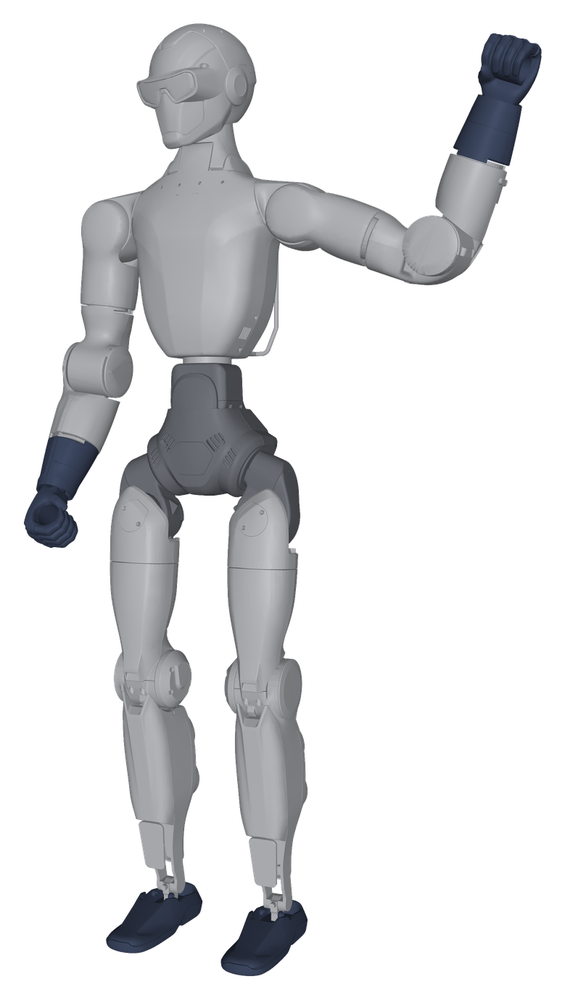
이 설명서에 대하여
| 대상 | Unitree R1 EDU. R1 Air와 R1 Basic은 2차 개발을 지원하지 않습니다. 현장 운용은 Unitree R1 운용 설명서를 보십시오. |
| 근거 문서 | Unitree R1 SDK Development Guide (support.unitree.com/home/en/R1_developer, 2026-11-06 미러 57쪽) ·
Unitree 교육 영상의 자막 · R1 URDF (r1_description) |
| SDK | unitree_sdk2 8e1b927 (2026-10-30) · unitree_sdk2_python 814556d (2026-09-21).
8e1b927보다 오래된 SDK 체크아웃에는 R1 파일이 보행 클라이언트(r1_loco_client)뿐입니다 (1장). |
| 함께 보는 책 | Unitree R1 운용 설명서 (현장 운용) |
| 판 | 한국어판 · 2026.11.18 |
| 문의 | go.support@wego-robotics.com |
문서 표시는 Unitree 공식 개발 문서의 내용이고, SDK 표시는 unitree_sdk2 8e1b927 소스에서
함수 이름 · 인자 · ID · 토픽 · 게인을 직접 확인한 내용입니다. 문서와 SDK가 다르면 SDK를 따르고 "문서와 SDK의 차이" 상자에 적었습니다.
Unitree 문서에 남은 G1 · Go2 문서의 흔적(G1 토픽 표 제목, G1 예제 코드 등)은 옮기지 않고 "문서 오류"로 표시했습니다.
개발 연산 유닛(PC2)의 공장 기본 계정은 unitree / 123입니다.
첫 접속 뒤 passwd로 비밀번호를 반드시 바꾸십시오.
이 설명서의 명령과 예제는 실제 로봇을 움직입니다. 실행 전에 로봇을 보호 프레임에 매달고, 리모컨 담당이 소프트 비상 정지를 누를 수 있게 대기하십시오.
© WeGo Robotics. 표지의 R1 이미지는 Unitree가 공개한 URDF 메시를 MuJoCo로 렌더링한 것입니다. 그림 4의 Dex3-1도 같은 방법으로 렌더링했고, 나머지 본문 그림은 Unitree 개발 문서와 교육 영상에서 가져왔습니다.
목차
- 01개발 환경과 시스템 구조SDK 얻기 · 네트워크 · 첫 예제
- 02저수준 제어디버그 모드 · 관절 순서 · 발목 병렬 구조 · 리모컨 데이터
- 03다관절 손Dex1-1 · Dex2/5 · Dex3-1 · BrainCo Revo2 · Revo2 Touch · LinkerHand O6
- 04DDS와 기본 서비스ChannelFactory · 주요 토픽 · RobotStateClient · 저수준 메시지
- 05보행 · 음성 · 영상 · SLAM 서비스LocoClient · AudioClient · 영상 스트림 · slam_operate
- 06고수준 제어보행 예제 · 팔 제어 arm_sdk · 팔 동작 서비스
- 07ROS 2와 DDS 예제
- 08오류 코드와 정의
- 09EDU 확장백팩 설치 · 설치 구멍 · 백업과 복구 · 손 설치
- 부록빠른 참조IP · 토픽 · 서비스 · 예제 · FSM ID
개발 환경과 시스템 구조
R1 EDU는 unitree_sdk2(C++)로 2차 개발을 합니다. 이 장은 로봇 안의 컴퓨터와 통신 구조,
SDK를 얻는 방법, 개발 PC의 네트워크 설정, 첫 예제 실행까지를 다룹니다.
로봇 안의 컴퓨터와 주소 문서
| 장치 | IP | 역할 |
|---|---|---|
| 운동 제어 컴퓨터 (PC1) | 192.168.123.161 | Unitree 공식 서비스(보행 · 균형 · 모터 제어, 영상 설정 웹 등)를 실행합니다. 사용자 개발에는 쓸 수 없습니다. |
| 개발 연산 유닛 (PC2) | 192.168.123.164 | EDU의 등에 다는 백팩(확장 도크)입니다. 사용자 프로그램은 여기에서만 실행합니다.
NVIDIA Jetson Orin NX(100 TOPS) 또는 Orin Nano(40 TOPS) 보드이며, 공장 기본 계정은 unitree / 123입니다 (9장). |
| Mid360 라이다 | 192.168.123.120 | SLAM 내비게이션 서비스용 (R1-EDU + Mid360 구성만, 5장) |
| 개발 PC | 192.168.123.99 | 권장 주소. 다른 장치와 겹치지 않는 192.168.123.x이면 됩니다 (문서 예: .222) |
Unitree의 Architecture Description 페이지는 "개발자는 PC1만 쓸 수 있고 PC1의 IP는 192.168.123.164"라고 적었지만, Quick Development와 SLAM 페이지는 .161을 PC1(공식 서비스, 개발 불가), .164를 개발용 PC2 · NX로 부릅니다. 이 설명서는 PC1 = .161, PC2 = .164로 씁니다. 주소 자체는 모든 페이지가 같습니다.

내부 통신과 클라우드 문서
| 구성 요소 | 내용 |
|---|---|
| DDS | 로봇 안 기능 모듈 사이의 통신. IDL은 ROS 2와 호환됩니다(알맞은 RMW 선택 필요). EDU는 DDS 또는 ROS 2로 인터페이스를 호출합니다 |
| 센서 수집 | 모터 · 카메라 등의 센서 데이터는 직렬 포트로 모은 뒤 DDS 미들웨어 계층으로 전달합니다 |
| OTA 모듈 | MQTT로 클라우드와 통신. 고장 정보 업로드, 시스템 업그레이드, WebRTC 신호 중계 |
| WebRTC 모듈 | 앱과의 주 데이터 경로. 음성 · 영상, 레이더 점군, 운동 상태, 제어 명령 |
| Bluetooth (BLE) | 앱과 연결해 네트워크 설정과 보안 인증 |
| 클라우드 서비스 | 사용자가 허락한 뒤에만 연결합니다. ① 운용 데이터 수집(개인정보 제외, 고장 감지 · 통계) ② WebRTC 원격 조작(P2P 또는 TURN 중계, 서버는 트래픽을 수집 · 분석하지 않음) ③ 시스템 업그레이드. 통신은 MQTT(장치 감시 · 업그레이드 · 신호 중계), HTTP(앱 · 웹과 로봇의 바인딩), TURN/STUN(P2P 연결 보조) |
| 앱 | 사용자 관리(HTTP Web API, 로봇 바인딩), BLE 네트워크 설정, WebRTC(영상 · 점군 · 상태 · 명령) |
| 개발 인터페이스 | ① DDS (C++ · Python) ② ROS 2 ③ GST (영상 전송 전용, 5장) |
두 가지 통신 방식 문서
| 방식 | 쓰임 | SDK에서 |
|---|---|---|
| 구독 / 발행 | 받는 쪽이 토픽을 구독하면 보내는 쪽이 계속 보냅니다. 중 · 고주파, 연속 데이터 (관절 상태 · 명령 등) | ChannelPublisher · ChannelSubscriber (4장) |
| 요청 / 응답 | 묻고 답하는 방식. 저주파 데이터 조회나 기능 전환 (모드 변경 · 동작 실행 등) | Client 상속 클래스 (5 · 6장) |
요청 / 응답은 두 가지로 부릅니다. API 호출은 REST API처럼 요청 토픽에 내용을 보내고 응답 토픽에서 답을 받으며, 응답은 브로드캐스트되고 UUID로 요청과 짝을 맞춥니다.
함수 호출은 API 호출을 함수로 감싼 것입니다 (예: LocoClient::Damp()). unitree_sdk2는 C++ 개발 라이브러리입니다.
SDK와 모델 얻기 문서
| 자료 | 위치 |
|---|---|
| unitree_sdk2 | github.com/unitreerobotics/unitree_sdk2 (Python: unitree_sdk2_python) |
| URDF | github.com/unitreerobotics/unitree_ros 의 robots/r1_description |
| STEP 간략 모델 | R1-EDU 26자유도 전체 (백팩 · 손 인터페이스 · 양안 카메라 포함). Unitree 문서 Get SDK 페이지의 zip |
| 발목 병렬 구조 모델 | Unitree 문서 Basic Motion Routine 페이지의 zip (2장) |
8e1b927보다 오래된 unitree_sdk2 체크아웃에는 R1 파일이 r1_loco_client와 include/unitree/robot/r1/loco/뿐이고,
그 LocoClient에는 LieDown() · GetUp()이 없습니다. 이 설명서가 다루는 저수준 예제, 팔 제어 · 팔 동작 예제, 음성 클라이언트,
dds_wrapper/robots/r1/는 8e1b927에만 있습니다. 개발 전에 git pull로 갱신하십시오.
Python SDK 814556d에는 unitree_sdk2py/r1/loco/와 예제 example/r1/high_level/r1_loco_client_example.py,
low_level/r1_low_level_example.py · r1_A5_low_level_example.py · r1_A7_low_level_example.py가 있습니다.
Python LocoClient의 WaveHand() · ShakeHand()는 sport 서비스의 API 7106(SET_ARM_TASK)을 부르는데,
R1 문서는 팔 동작을 arm 서비스로 안내합니다(6장). R1에서 확인되지 않은 함수이니 쓰지 마십시오.
개발 환경 문서
- Ubuntu 20.04에서 개발하기를 권장합니다. Mac · Windows는 지원하지 않습니다.
- 개발 PC와 R1의 스위치를 같은 네트워크에 둡니다. 처음에는 랜 케이블(필요하면 USB 어댑터)로 직접 연결하고, 로봇과 통신하는 네트워크 카드를 192.168.123.x 대역(권장 .99)으로 설정하십시오.
설치와 빌드 문서 SDK
# SDK 설치 (헤더 · 라이브러리를 시스템에 설치) cd unitree_sdk2/ && mkdir build && cd build cmake .. && sudo make install # 예제 빌드 (BUILD_EXAMPLES 기본값 ON) cd unitree_sdk2 && cmake -Bbuild && cmake --build build
문서는 빌드한 예제가 build 폴더에 있다고 적었지만, SDK의 CMakeLists.txt는 실행 파일을 build/bin/에 둡니다 SDK.
R1 예제의 실행 파일 이름은 example/r1/CMakeLists.txt가 정합니다.
| 실행 파일 (build/bin) | 소스 (example/r1/) | 내용 · 장 |
|---|---|---|
r1_loco_client | high_level/r1_loco_client_example.cpp | 보행 · 모드 명령 (6장). 이름에 _example이 없습니다 |
r1_arm_sdk_dds_example | high_level/r1_arm_sdk_dds_example.cpp | 팔 덧씌움 rt/arm_sdk (6장). fmt 라이브러리 필요 |
r1_arm_action_example | high_level/r1_arm_action_example.cpp | 팔 동작 서비스 (6장) |
r1_ankle_swing_example | low_level/r1_ankle_swing_example.cpp | 저수준 발목 흔들기 (2장) |
r1_A5_wrist_swing_example | low_level/r1_A5_wrist_swing_example.cpp | 상체 12모터 저수준 (2장, 문서 없음) |
r1_A7_wrist_swing_example | low_level/r1_A7_wrist_swing_example.cpp | 상체 16모터 저수준 (2장, 문서 없음) |
r1_audio_client_example | audio/r1_audio_client_example.cpp | 음성 · 조명 (5장) |
네트워크 설정 문서
- 연결랜 케이블 한쪽을 로봇에, 다른 쪽을 PC에 꽂습니다. PC 쪽 유선(또는 USB 이더넷) 인터페이스를 수동 IPv4로 바꾸고 192.168.123.x(예:
192.168.123.99, 넷마스크255.255.255.0)를 지정합니다. - 확인
ping 192.168.123.161로 운동 제어 컴퓨터가 응답하는지 봅니다. - 인터페이스 이름
ifconfig(또는ip a)에서 192.168.123.x가 붙은 인터페이스 이름을 적어 둡니다 (문서 예:enxf8e43b808e06,enp3s0). 모든 예제가 이 이름을 인자로 받습니다. - PC2 접속 (선택)
ping 192.168.123.164뒤ssh unitree@192.168.123.164. 공장 기본 비밀번호는123이며, 첫 접속 때 바꿉니다.
첫 예제 실행 문서 SDK
- 매달기이 예제는 여러 관절을 움직입니다. 로봇을 보호 프레임에 매답니다.
- 디버그 모드리모컨으로 디버그 모드에 들어갑니다 (운용 설명서 4장, 이유는 2장).
- 실행
./build/bin/r1_ankle_swing_example <인터페이스>. 3초 동안 모든 관절이 0 자세로 가고, 발목이 PR 모드 → AB 모드로 흔들립니다 (2장).
개발 팁 문서
| 주제 | Unitree 권고 |
|---|---|
| 다리 동작 | 무릎은 곧게 또는 거의 곧게 폅니다. 걸음 빈도를 줄이고 제자리 걸음을 피합니다. 걸을 때 두 발을 약간 모으고 벌리지 않습니다 (사람 같은 자연스러운 동작을 위해) |
| 영상 공개 | 연구 성과 영상을 공개할 때는 영상 전체에 걸쳐 연구실 이름이나 로고를 잘 보이게 넣기를 권합니다 (출처 혼동 방지) |
| 다관절 손 | 3장 첫머리를 보십시오 |
저수준 제어
저수준 제어는 rt/lowcmd로 관절 모터마다 목표 위치 · 속도 · 토크와 게인을 직접 보내는 방식입니다.
로봇의 균형은 누구도 대신 잡아 주지 않으므로, 반드시 매단 상태와 디버그 모드에서 작업합니다.
디버그 모드가 필요한 이유 문서
현재 시스템 버전에서는 R1을 켜면 리모컨을 만지지 않아도 내장 운동 제어 프로그램이 자동으로 시작되어 주기적으로 속도 0 명령을 보냅니다.
이 상태에서 SDK로 명령을 보내면 두 명령이 충돌해 로봇이 떨립니다. 그래서 SDK로 개발 · 디버깅할 때는 디버그 모드로 들어가 내장 프로그램의 명령을 멈춥니다.
진입 · 확인 조작과, 확인 뒤의 동작이 교육 영상과 다를 때의 조치는 운용 설명서 4장에 있습니다.
디버그 모드에서는 내장 제어가 완전히 빠지므로 보행 서비스, arm_sdk, 팔 동작 서비스(5 · 6장)는 동작하지 않습니다.
8e1b927의 저수준 예제(r1_ankle_swing_example, A5 · A7)는 시작할 때 unitree::robot::b2::MotionSwitcherClient(서비스 motion_switcher, 시간 제한 5 s)로
CheckMode(form, name)를 부르고, 이름이 비어 있지 않으면 ReleaseMode()를 5초 간격으로 반복합니다. 문서에는 이 단계가 없습니다.
해제 실패 시 오류 7001 ~ 7009(8장)가 돌아올 수 있습니다.
전신 관절 순서 문서
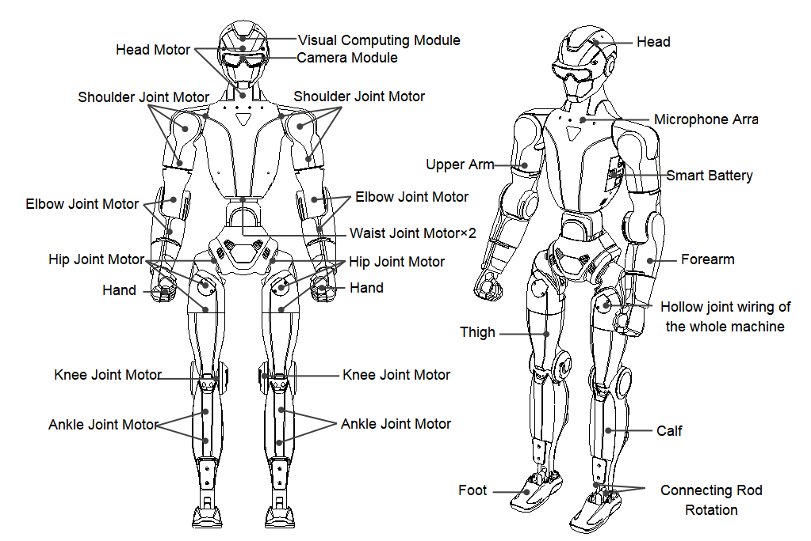
unitree_hg::msg::dds_::LowCmd_.motor_cmd[]와 LowState_.motor_state[]의 번호(IDL 번호)입니다. 두 배열은 35칸이며 SDK,
0 ~ 30은 몸통, 31 ~ 34는 Dex1-1 · Dex2/5 손(3장)입니다. 범위는 Unitree About R1의 값, 토크 · 속도 한계는 R1 URDF의 effort · velocity입니다.
"arm_sdk" 열은 6장의 팔 덧씌움으로 제어할 수 있는 관절입니다.
| IDL | 이름 | 관절 | 범위 (rad) | 범위 (°) | N·m | rad/s | arm_sdk |
|---|---|---|---|---|---|---|---|
| 0 | L_LEG_HIP_PITCH | 왼쪽 고관절 피치 | -2.9322 ~ 2.5482 | -168° ~ 146° | 60 | 18.8 | |
| 1 | L_LEG_HIP_ROLL | 왼쪽 고관절 롤 | -1.0472 ~ 1.7453 | -60° ~ 100° | 60 | 18.8 | |
| 2 | L_LEG_HIP_YAW | 왼쪽 고관절 요 | -2.7402 ~ 2.7402 | -157° ~ 157° | 60 | 18.8 | |
| 3 | L_LEG_KNEE | 왼쪽 무릎 | -0.1745 ~ 2.4260 | -10° ~ 139° | 60 | 18.8 | |
| 4 | L_LEG_ANKLE_PITCH | 왼쪽 발목 피치 | -0.8727 ~ 0.5760 | -50° ~ 33° | 50 | 30 | |
| 5 | L_LEG_ANKLE_ROLL | 왼쪽 발목 롤 | -0.2618 ~ 0.2618 | -15° ~ 15° | 50 | 30 | |
| 6 | R_LEG_HIP_PITCH | 오른쪽 고관절 피치 | -2.9322 ~ 2.5482 | -168° ~ 146° | 60 | 18.8 | |
| 7 | R_LEG_HIP_ROLL | 오른쪽 고관절 롤 | -1.7453 ~ 1.0472 | -100° ~ 60° | 60 | 18.8 | |
| 8 | R_LEG_HIP_YAW | 오른쪽 고관절 요 | -2.7402 ~ 2.7402 | -157° ~ 157° | 60 | 18.8 | |
| 9 | R_LEG_KNEE | 오른쪽 무릎 | -0.1745 ~ 2.4260 | -10° ~ 139° | 60 | 18.8 | |
| 10 | R_LEG_ANKLE_PITCH | 오른쪽 발목 피치 | -0.8727 ~ 0.5760 | -50° ~ 33° | 50 | 30 | |
| 11 | R_LEG_ANKLE_ROLL | 오른쪽 발목 롤 | -0.2618 ~ 0.2618 | -15° ~ 15° | 50 | 30 | |
| 12 | WAIST_ROLL | 허리 롤 | -0.5236 ~ 0.5236 | -30° ~ 30° | 60 | 18.8 | |
| 13 | WAIST_YAW | 허리 요 | -2.618 ~ 2.618 | -150° ~ 150° | 60 | 18.8 | O |
| 14 | EMPTY | 비어 있음 (G1의 허리 피치 자리) | |||||
| 15 | L_SHOULDER_PITCH | 왼쪽 어깨 피치 | -3.1416 ~ 2.0944 | -180° ~ 120° | 60 | 18.8 | O |
| 16 | L_SHOULDER_ROLL | 왼쪽 어깨 롤 | -0.2269 ~ 2.4784 | -13° ~ 142° | 60 | 18.8 | O |
| 17 | L_SHOULDER_YAW | 왼쪽 어깨 요 | -1.9199 ~ 1.9199 | -110° ~ 110° | 33 | 33.4 | O |
| 18 | L_ELBOW | 왼쪽 팔꿈치 | -0.9757 ~ 2.1850 | -56° ~ 125° | 33 | 33.4 | O |
| 19 | L_WRIST_ROLL | 왼쪽 손목 롤 | -1.9199 ~ 1.9199 | -110° ~ 110° | 33 | 33.4 | O |
| 20 | EMPTY | 비어 있음 · A7 예제: 왼쪽 손목 피치 | |||||
| 21 | EMPTY | 비어 있음 · A7 예제: 왼쪽 손목 요 | |||||
| 22 | R_SHOULDER_PITCH | 오른쪽 어깨 피치 | -3.1416 ~ 2.0944 | -180° ~ 120° | 60 | 18.8 | O |
| 23 | R_SHOULDER_ROLL | 오른쪽 어깨 롤 | -2.4784 ~ 0.2269 | -142° ~ 13° | 60 | 18.8 | O |
| 24 | R_SHOULDER_YAW | 오른쪽 어깨 요 | -1.9199 ~ 1.9199 | -110° ~ 110° | 33 | 33.4 | O |
| 25 | R_ELBOW | 오른쪽 팔꿈치 | -0.9757 ~ 2.1850 | -56° ~ 125° | 33 | 33.4 | O |
| 26 | R_WRIST_ROLL | 오른쪽 손목 롤 | -1.9199 ~ 1.9199 | -110° ~ 110° | 33 | 33.4 | O |
| 27 | EMPTY | 비어 있음 · A7 예제: 오른쪽 손목 피치 | |||||
| 28 | EMPTY | 비어 있음 · A7 예제: 오른쪽 손목 요 | |||||
| 29 | HEAD_PITCH | 머리 피치 | -0.6283 ~ 0.6283 | -36° ~ 36° | 33 | 33.4 | O |
| 30 | HEAD_YAW | 머리 요 | -2.0071 ~ 2.0071 | -115° ~ 115° | 33 | 33.4 | O |
- R1의 팔은 한쪽 5자유도(어깨 3 + 팔꿈치 1 + 손목 롤 1)이고 손목 피치 · 요가 없습니다. 허리는 롤 · 요 2자유도이며 허리 피치 자리(14)는 비어 있습니다.
- 팔꿈치 범위는 문서가 -0.9757 ~ 2.1850, URDF가 -0.97564 ~ 2.1852로 0.0002 rad 다릅니다. 표는 문서 값을 씁니다.
- 20 · 21 · 27 · 28은 26자유도 R1에서 비어 있습니다. SDK의
r1_A7_wrist_swing_example은 이 칸을 손목 피치 · 요로 씁니다 (아래).
Joint Motor Sequence 페이지의 R1 표에는 G1 표의 열이 섞여 있습니다(12 · 13번의 WAIST_YAW · WAIST_A, 20 · 21번의 손목 피치 · 요, 이름 없는 수치 열).
Dex3-1 표의 수치 열(0.76 | 108)도 같은 흔적입니다. 이 설명서는 IDL 번호와 이름만 옮겼습니다.
mode_machine 값 문서 SDK
Joint Motor Sequence 페이지는 26자유도 판을 LowCmd_.mode_machine == 1로 표기합니다. SDK 예제는 이 값을 정하지 않고 LowState_.mode_machine을
읽어 그대로 LowCmd_에 넣으며, 처음 받을 때 R1 type: N으로 출력합니다. 받은 값을 그대로 돌려보내십시오.
Basic Services 페이지 주석의 "4: 23-Dof, 5: 29-Dof, 6: 27-Dof"는 G1의 값이므로 R1에 쓰지 마십시오.
SDK 예제의 압축 번호 SDK
r1_ankle_swing_example은 26개 관절에 0 ~ 25의 압축 번호(R1JointIndex)를 붙이고 joint_idx_in_idl로 IDL 번호에 옮깁니다:
{0 ~ 13, 15 ~ 19, 22 ~ 26, 29, 30}. 예를 들어 압축 번호 LeftShoulderPitch = 14는 IDL 15입니다.
반면 dds_wrapper/robots/r1/defines.h의 r1::JointIndex는 IDL 번호 그대로입니다 (LeftShoulderPitch = 15, HeadPitch = 29). 두 번호 체계를 섞지 마십시오.
발목 병렬 구조와 mode_pr 문서
R1의 발목은 병렬 기구입니다. 실제로 모터가 직접 구동하는 것(능동)은 A · B 관절이고, 피치 · 롤(PR) 관절은 수동입니다.
둘 사이에 구속 관계가 두 개 있어 발목의 자유도는 2입니다. LowCmd_.mode_pr로 두 가지 제어 모드를 고릅니다.
| mode_pr | 모드 | 내용 |
|---|---|---|
| 0 | PR (기본) | 발목 피치 · 롤을 지령합니다. URDF와 같은 관절이며, 내부에서 A · B를 조정해 PR을 만듭니다 |
| 1 | AB | A · B 모터를 직접 지령합니다. 병렬 기구의 기구학은 사용자가 계산합니다 |
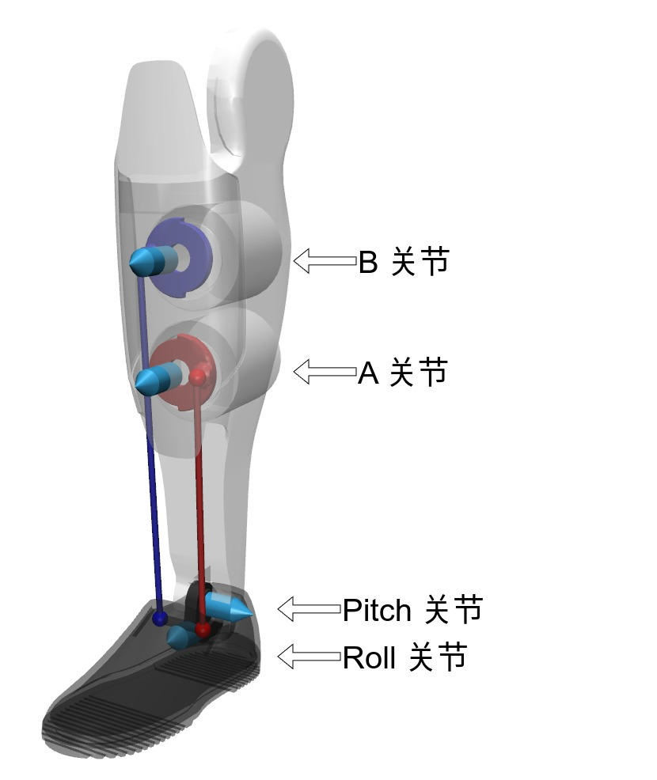
AB 모드에서 IDL 4 · 10은 B, 5 · 11은 A입니다 (SDK: LeftAnkleB = 4, LeftAnkleA = 5) SDK.
rt/arm_sdk에서는 같은 mode_pr 칸이 팔 제어의 가중치로 쓰입니다 (6장).
저수준 예제 r1_ankle_swing_example 문서 SDK
| 구성 | 내용 |
|---|---|
| 초기화 | ChannelFactory::Instance()->Init(0, 인터페이스), 발행 rt/lowcmd(LowCmd_), 구독 rt/lowstate(LowState_, 콜백 LowStateHandler, 큐 1).
SDK는 rt/secondary_imu(IMUState_, 몸통 IMU)도 구독해 500회마다 출력합니다 |
| 스레드 | CreateRecurrentThreadEx로 2000 µs(500 Hz) 주기 스레드 두 개: LowCommandWriter(명령 발행) · Control(제어 계산). control_dt_ = 0.002 s |
| LowCommandWriter | mode_pr · mode_machine을 채우고 관절마다 mode = 1(1 사용, 0 끄기), tau, q, dq, kp, kd를 넣은 뒤
crc = Crc32Core((uint32_t*)&cmd, (sizeof(cmd) >> 2) - 1)로 검사합을 붙여 Write |
| LowStateHandler | CRC를 검사하고(틀리면 [ERROR] CRC Error), q · dq, IMU gyroscope · rpy를 버퍼에 넣습니다. 다리 모터의 motorstate가 0이 아니면 오류를 출력합니다.
SDK는 리모컨 40바이트도 해석하고, 500회(1초)마다 모든 모터의 mode, 위치, 속도, tau_est, 온도 2개, 전압, sensor, motorstate, reserve를 출력합니다 |
| 1단계 0 ~ 3 s | 현재 자세에서 0 자세로: q = (1 - t/3) · q₀ |
| 2단계 3 ~ 6 s | PR 모드. 피치 ±30°, 롤 ±30°를 1 Hz 사인(sin 2πt)으로. 오른쪽 롤은 부호 반대 |
| 3단계 6 s ~ | AB 모드. A ±30°, B ±10°를 0.5 Hz(sin πt, B는 위상 π)로 끝날 때까지. 오른쪽은 부호 반대 |
| 예제 게인 SDK | 다리 12 | 허리 2 | 어깨 · 팔꿈치 | 손목 롤 | 머리 피치 | 머리 요 |
|---|---|---|---|---|---|---|
| kp | 200 | 300 | 100 | 50 | 50 | 10 |
| kd | 3 | 5 | 2 | 2 | 2 | 0.1 |
- 2단계의 롤 진폭: 문서 코드는 10°, SDK는 30°입니다.
- 문서 코드는
motor_cmd().at(i)에 압축 번호i를 그대로 씁니다. 그러면 14번 이후 관절(팔 · 머리)이 엉뚱한 IDL 칸에 들어갑니다. SDK는joint_idx_in_idl[i]로 옮깁니다. - 문서 코드는
Control()안에서ReportRPY()로 자세를 출력하고, SDK는 상태 콜백에서 1초마다 출력합니다.MotionSwitcherClient해제와rt/secondary_imu구독은 SDK에만 있습니다.
상체 저수준 예제 A5 · A7 SDK
Unitree 문서에는 설명이 없고 SDK에만 있는 예제입니다. 코드 안에서는 R1Z라는 이름을 쓰며, 어떤 R1 변형용인지 문서는 밝히지 않습니다.
두 예제 모두 rt/lowcmd에 상체 관절만 씁니다 (다리 · 허리 명령 없음).
| 예제 | 모터 (IDL) | 동작 (각 2 s, ±30°) | 게인 kp / kd |
|---|---|---|---|
r1_A5_wrist_swing_example | 12개: 팔 15 ~ 19 · 22 ~ 26, 머리 29 · 30 | 0 자세(2 s) → 손목 롤 → 머리 요, 반복 | 팔 100 / 2 (손목 50 / 2), 머리 피치 50 / 2, 요 10 / 0.1 |
r1_A7_wrist_swing_example | 16개: 위에 손목 피치 · 요 20 · 21 · 27 · 28 추가 | 0 자세 → 손목 롤 → 손목 피치 → 손목 요 → 머리 요, 반복 | 팔 100 / 2 (손목 3개 50 / 2), 머리 같음 |
리모컨 데이터 문서 SDK
rt/lowstate의 wireless_remote[40]에 리모컨 원시 데이터 40바이트가 들어 있습니다(SDK 주석: 현재 24바이트 사용).
조이스틱은 축마다 -1.0 ~ 1.0, 버튼과 조합마다 고유한 정수 값이 있습니다. 리모컨의 실제 버튼 배치는 운용 설명서 4장의 그림을 보십시오.
| xRockerBtnDataStruct | 형 |
|---|---|
head[2] | uint8 ×2 |
btn | xKeySwitchUnion (uint16) |
lx · rx · ry | float |
L2 | float (아날로그) |
ly | float |
idle[16] | uint8 ×16 |
| btn 비트 (0부터) | 버튼 |
|---|---|
| 0 ~ 3 | R1 · L1 · start · select |
| 4 ~ 7 | R2 · L2 · F1 · F2 |
| 8 ~ 11 | A · B · X · Y |
| 12 ~ 15 | up · right · down · left |
unitree_hg::msg::dds_::LowState_ low_state; // R1은 unitree_hg
xRockerBtnDataStruct remote_key_data;
memcpy(&remote_key_data, &low_state.wireless_remote()[0], 40);
SDK의 example/r1/low_level/gamepad.hpp에는 Gamepad 클래스가 있습니다. 축 값에 데드존 0.01과 평활 계수 0.03을 적용하고,
버튼마다 pressed · on_press · on_release를 줍니다. REMOTE_DATA_RX 공용체로 40바이트 버퍼와 구조체를 오갑니다.
Remote Control Data 페이지의 변환 코드는 unitree_go::msg::dds_::LowState_(Go2 형)를 씁니다. R1은 unitree_hg::msg::dds_::LowState_입니다 (SDK 예제와 같음).
다관절 손
R1 EDU에는 다관절 손을 선택해 달 수 있습니다. 손마다 연결 방식과 토픽이 다르므로, 먼저 아래 표에서 내 손의 제어 경로를 확인하십시오. 설치 영상은 9장에 정리했습니다.
| 손 | 자유도 | 연결 | 명령 · 상태 | 필요 프로그램 |
|---|---|---|---|---|
| Dex1-1 (그리퍼) | 1 × 2 | 팔 내부 케이블 → 관절 버스 | rt/lowcmd · rt/lowstate의 IDL 31 · 33 | 앱에서 손 모델 설정 |
| Dex2/5 | 2 × 2 | 팔 내부 케이블 → 관절 버스 | IDL 31 ~ 34 (토크 제어만) | 앱에서 손 모델 설정 |
| Dex3-1 | 7 × 2 | USB 2.0 | rt/dex3/{left|right}/cmd · …/state | 로봇 내장 서비스 |
| BrainCo Revo2 | 6 × 2 | USB-직렬 (손마다 1개) | rt/brainco/{left|right}/{cmd|state} | brainco_hand_service |
| LinkerHand O6 | 6 × 2 | USB-직렬, Modbus RTU | rt/linker/{left|right}/{cmd|state} | linker_hand_service |
- 로봇 동작 때문에 손이 몸통과 부딪히지 않게 하십시오. 어깨 모터의 바깥쪽 오프셋을 키우면 충돌을 줄일 수 있습니다.
- 손을 단 채 달리기나 균형 시험 같은 격한 동작을 개발하지 마십시오. 손을 단 상태의 눕기 · 쪼그려 앉기는 운용 설명서 2장의 주의를 따릅니다.
Dex1-1 · Dex2/5 문서
| IDL | 모터 |
|---|---|
| 31 | 왼손: Dex2/5의 네 손가락, 또는 Dex1-1 왼손 |
| 32 | 왼손: Dex2/5의 엄지 |
| 33 | 오른손: Dex2/5의 네 손가락, 또는 Dex1-1 오른손 |
| 34 | 오른손: Dex2/5의 엄지 |
- 케이블은 팔 안쪽으로 지나갑니다. Unitree Explore 앱에서 주변 장치(손) 모델을 고른 뒤 로봇을 다시 켜야 쓸 수 있습니다.
- Dex2/5는 토크 제어만 지원합니다.
- 2장의 저수준 예제에 해당 IDL 모터를 추가해 제어합니다. 기본값은 kp 40, kd 2, 나머지 필드는 다른 모터와 같게 둡니다.
LowCmd_의 35칸에 31 ~ 34가 들어 있습니다 SDK. - Dex1-1 단독 제어는 Unitree의 Dex1-1 Developer 문서를 참고하십시오.
Dex3-1 문서 SDK
| 항목 | 값 |
|---|---|
| 자유도 | 7: 엄지 3 · 검지 2 · 중지 2 (모두 능동) |
| 관절 각 | 엄지 0 ~ +100°, -35 ~ +60°, -60 ~ +60° / 검지 · 중지 0 ~ +90°, 0 ~ +100° |
| 제어 인터페이스 | USB 2.0 |
| 전압 | 정격 24 V (Dexterous Hand) · 동작 12 ~ 58 V (About R1) |
| 감지 범위 | 10 g ~ 2500 g |
| 촉각 센서 (선택) | 손끝마다 3 × 4 배열. 위치 수는 문서마다 6 / 9로 다르며, SDK 예제는 9개(SENSOR_MAX)를 받습니다 |
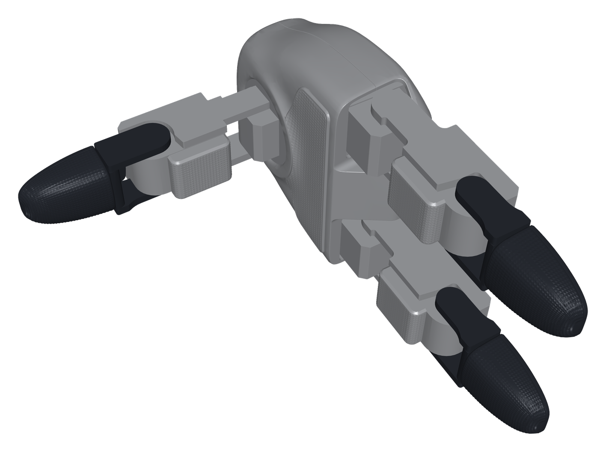
토픽과 메시지
| 토픽 | 형 · 내용 |
|---|---|
rt/dex3/left/cmd · rt/dex3/right/cmd | unitree_hg::msg::dds_::HandCmd_ 발행 |
rt/lf/dex3/left/state · rt/lf/dex3/right/state | HandState_ 구독 (lf = 저주파). SDK 예제가 쓰는 토픽입니다 SDK |
rt/dex3/left/state · rt/dex3/right/state | HandState_. Dexterous Hand 페이지가 안내하는 토픽 |
| 구조체 · 필드 SDK | 내용 |
|---|---|
HandCmd_ | motor_cmd: MotorCmd_ 시퀀스(7개로 resize), reserve[4] |
HandState_ | motor_state(MotorState_), press_sensor_state(PressSensorState_), imu_state, power_v, power_a, system_v, device_v, error[2], reserve[2] |
power_v · power_a | 손 전체 입력 전원의 전압 · 전류 |
system_v · device_v | 손 내부 전원 전압 · 강압 모듈 출력 전압 |
error | 손이 내는 오류 코드 (8장 모터 상태 표) |
PressSensorState_ | pressure[12](float), temperature[12](float), lost, reserve |
헤더는 SDK 설치 후 /usr/local/include/unitree/idl/hg/HandCmd_.hpp · HandState_.hpp에 있습니다 (make install 기본 경로) SDK.
촉각 값은 100000 이상이 유효, 30000은 값 없음이며, 표시 · 계산 때는 100000을 10.0000으로 줄여 쓰기를 권합니다 문서.
- 문서의
PressSensorState는unsigned short data[12]; id; temp; reserve[2]이지만, SDK의PressSensorState_는float pressure[12]; float temperature[12]; lost; reserve입니다. - 문서의 헤더 경로
/usr/local/include/unitree/hg_idl/은 SDK에 없습니다. 실제는unitree/idl/hg/입니다. - 문서의
MotorCmd_t(tor_des·spd_des·pos_des·k_pos·k_spd·CRC32, 20바이트)는 모터 쪽 패킷 형식입니다. DDS로 보내는MotorCmd_의 필드는mode, q, dq, tau, kp, kd, reserve입니다 (4장).
관절 순서와 mode 바이트
| IDL | 이름 | 왼손 URDF | 오른손 URDF |
|---|---|---|---|
| 0 | thumb_0 | left_hand_zero | right_hand_zero |
| 1 | thumb_1 | left_hand_one | right_hand_one |
| 2 | thumb_2 | left_hand_two | right_hand_two |
| 3 | middle_0 | left_hand_five | right_hand_three |
| 4 | middle_1 | left_hand_six | right_hand_four |
| 5 | index_0 | left_hand_three | right_hand_five |
| 6 | index_1 | left_hand_four | right_hand_six |
| mode 비트 | 뜻 (RIS_Mode_t) |
|---|---|
0 ~ 3 id | 모터 ID 0 ~ 14, 15 = 전체 방송 |
4 ~ 6 status | 0 잠금, 1 FOC |
7 timeout | 지령 쪽: 1 = 시간 초과 보호 사용(기본 1 s). 모터 쪽: 1 = 보호 동작함 (지령에서 0으로 지움) |
IDL 순서는 엄지 → 중지 → 검지입니다. URDF는 손마다 같은 좌표계로 만들어져 왼손과 오른손의 이름 순서가 다릅니다 (굵은 글씨). URDF는 unitree_ros/robots/dexterous_hand_description에 있습니다.
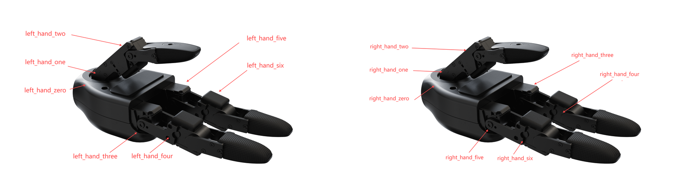
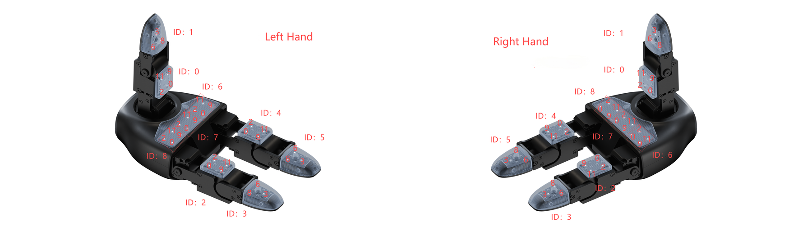
pressure[12] 번호의 위치, 왼손 · 오른손 (Unitree 문서).예제 g1_dex3_example SDK
R1 전용 Dex3-1 예제는 없고, 문서도 example/g1/dex3/g1_dex3_example.cpp(실행 파일 g1_dex3_example <인터페이스>)를 안내합니다.
실행하면 손(L / R)을 묻고, 키로 상태를 바꿉니다.
| 키 | 동작 | 게인 · 모드 |
|---|---|---|
r | Rotate: 관절 한계 사이를 사인으로 왕복 (시작 상태) | kp 0.5, kd 0.1, status 1 |
g | Grip: 한계의 가운데 위치로 1초마다 지령 | kp 1.5, kd 0.1, status 1 |
p | Print: 관절 위치를 한계 기준 0 ~ 1로 정규화해 0.1초마다 출력 | — |
s · q | Stop: 모든 지령 0 / Quit | kp 0, kd 0, status 1, timeout 1 |
예제의 관절 한계(rad, IDL 순): 왼손 최대 {1.05, 1.05, 1.75, 0, 0, 0, 0} · 최소 {-1.05, -0.724, 0, -1.57, -1.75, -1.57, -1.75},
오른손 최대 {1.05, 0.742, 0, 1.57, 1.75, 1.57, 1.75} · 최소 {-1.05, -1.05, -1.75, 0, 0, 0, 0}.
문서의 코드는 Rotate에 timeout 1, Grip에 timeout 0을 넣지만, SDK의 Rotate · Grip은 timeout 비트를 설정하지 않습니다 (초기화되지 않은 값). 직접 작성할 때는 명시적으로 넣으십시오.
Dexterous Hand 페이지는 "G1 내부의 상주 서비스가 Dex3-1과 통신한다"고 적고, 필드 설명을 H1-2 문서로 넘깁니다. 이 장의 필드 표는 SDK 헤더에서 옮겼습니다.
BrainCo Revo2 · Revo2 Touch (brainco_hand_service)
BrainCo 2세대 다관절 손(한쪽 6자유도)은 RS-485 직렬로 제어합니다. Unitree 공개 저장소 github.com/unitreerobotics/brainco_hand_service(d71996b, 2026-05-11)가 직렬 통신을 DDS로 바꿉니다.
README는 빌드 대상을 "PC2 (NVIDIA Jetson Orin NX)"로 적는데, R1의 PC2(백팩, .164)도 같은 Jetson 계열(aarch64)이라 README 절차를 그대로 따릅니다. 촉각형 Revo2 Touch도 같은 서비스 · 토픽을 씁니다.
아래는 README와 소스(main.cpp · include/param.h · test/ · setup_autostart.sh)를 읽은 내용입니다.
| 토픽 | 타입 · 내용 |
|---|---|
rt/brainco/left/cmd · rt/brainco/right/cmd | unitree_go::msg::dds_::MotorCmds_ (cmds 6개) · 사용자 → 손 |
rt/brainco/left/state · rt/brainco/right/state | unitree_go::msg::dds_::MotorStates_ (states 6개) · 손 → 사용자, 100 Hz |
| 번호 | 0 | 1 | 2 | 3 | 4 | 5 |
|---|---|---|---|---|---|---|
| 채널 | Thumb엄지 | Thumb_aux엄지 보조 | Index검지 | Middle중지 | Ring약지 | Pinky새끼 |
| 필드 | 뜻 |
|---|---|
cmds[i].q | 목표 위치 0 ~ 1 (0 = 폄, 1 = 쥠) 실측 (WeGo가 R1의 Revo2 두 손에서 확인, 2026-10-12). 범위 밖은 잘라내고 ×1000 해서 손의 정규화 위치로 보냅니다 |
cmds[i].dq | 속도 0 ~ 1 (×1000). 서비스 기본값 1.0, README도 모두 1.0을 권장 |
cmds[i]의 tau · kp · kd · mode | 쓰지 않음 |
states[i].q · dq · tau_est | 위치 · 속도 · 전류를 각각 1000으로 나눈 값 |
- 손 찾기:
/dev/ttyUSB*·/dev/ttyHAND*·/dev/ttyUN*를 460800 bps로 훑어 장치 ID 126(0x7E) = 왼손, 127(0x7F) = 오른손을 찾고, 손의 SKU가 왼손 · 오른손과 맞는지 확인합니다. 포트 이름과 왼손 · 오른손 연결 순서는 상관없습니다. - 옵션(
param.h):-n·--network_interface(DDS 인터페이스, 기본값 빈 문자열) ·-h·-v가 있습니다. - R1 PC2의 로봇망 인터페이스 이름은
ip -br addr | grep 192.168.123.164로 확인해-n에 넣습니다.
# PC2(.164)에서. unitree_sdk2를 먼저 sudo make install (1장) sudo apt install libspdlog-dev libfmt-dev cd ~ && git clone https://github.com/unitreerobotics/brainco_hand_service cd brainco_hand_service && mkdir build && cd build && cmake .. && make -j6 cd ~/brainco_hand_service/bin # sudo는 LD_LIBRARY_PATH를 넘기지 않으므로 env로 지정 L=$HOME/brainco_hand_service/lib/aarch64 # 터미널 1: 서비스 sudo env LD_LIBRARY_PATH=$L ./brainco_hand_server -n <인터페이스> # 터미널 2: 시험 (인자 없으면 left) sudo env LD_LIBRARY_PATH=$L ./test_brainco_hand_server right # 정상: "left/right hand bound to /dev/tty…", "Starting worker"
cmd.cmds().resize(6); // 반쯤 쥠, 최대 속도 for (int i = 0; i < 6; ++i) { cmd.cmds()[i].q() = 0.5f; cmd.cmds()[i].dq() = 1.f; } // 토픽 rt/brainco/right/cmd pub->Write(cmd);
test_brainco_hand_server는 시작하자마자 손을 모두 폄 → 엄지 빼고 쥠 → 모두 쥠을 0.7초 간격으로 끝없이 반복합니다. 손 안에 물건이나 손가락이 없는지 확인하고 실행하십시오.
- 현재 저장소가 만드는 실행 파일은
brainco_hand_server·test_brainco_hand_server입니다 (CMakeLists.txt). 이전 판 설명서의brainco_hand --id … --serial …·example_brainco_hand는 더 이상 빌드되지 않습니다. 장치 ID와 포트는 서비스가 스스로 찾습니다. - README의 실행 예는
--network eth0이지만, 소스에 정의된 옵션은--network_interface(-n)입니다. 위처럼-n을 쓰십시오. - 라이브러리는 아키텍처별로
lib/aarch64·lib/x86_64에 들어 있습니다. R1 PC2는aarch64입니다.
부팅 시 자동 시작
서비스는 손이 연결된 동안 계속 돌아야 하고, 터미널(ssh)에서 띄운 서버는 터미널을 닫으면 함께 끝납니다. 상시 운용에는 공식 스크립트로 서비스를 등록하십시오.
스크립트는 /etc/systemd/system/brainco_hand.service를 만들고 (User=unitree · Group=dialout, 라이브러리 경로 lib/$(uname -m)), 바로 시작합니다. 다만 -n을 넘기지 않으므로 인터페이스를 지정하려면 실행 줄을 고칩니다.
# 등록 + 시작 (sudo 암호 입력) cd ~/brainco_hand_service && bash setup_autostart.sh # ExecStart 줄 끝에 " -n <인터페이스>" 추가 후 저장 sudo systemctl edit --full brainco_hand.service sudo systemctl restart brainco_hand.service sudo systemctl status brainco_hand.service # active (running) sudo journalctl -u brainco_hand.service -f # 로그
- 서비스는 마지막으로 받은 명령을 10 ms마다 손에 다시 보냅니다 (
main.cpp의 100 Hz 루프). 내 프로그램을 끝내도 손은 마지막 자세를 유지합니다. - BrainCo SDK로 직렬 포트를 직접 다룰 때는 통신이 겹치지 않도록 먼저
sudo systemctl stop brainco_hand.service로 멈추십시오. Restart=always·RestartSec=5라서 서버가 비정상 종료되면 5초 뒤 다시 뜹니다.
Revo2 Touch 실측 — 손 동작과 Python 제어 실측
WeGo가 Revo2 Touch 두 손(2026-11-10)을 이 서비스로 직접 구동하며 확인한 손 자체의 동작입니다.
| 항목 | 시험 장비에서 확인한 값 |
|---|---|
| 손 | BrainCo Revo2 Touch (서비스 로그 hardware_type 6), 중형 오른손 (sku_type 1) · 중형 왼손 (2), 펌웨어 1.0.22.U |
| 연결 확인 | PC2에서 lsusb와 ls -l /dev/ttyUSB* /dev/ttyUN* /dev/ttyHAND*로 손의 직렬 장치 이름 · 권한을 확인합니다 |
| 왼손 · 오른손 배정 | 서비스가 장치 ID로 찾습니다 (위 절). 첫 포트에서 반대쪽 손 정보를 못 읽는다는 경고가 한 번 나오는 것은 정상입니다 |
개발 PC(또는 PC2)에서 unitree_sdk2_python(1장)으로 바로 쓸 수 있습니다. 아래 코드는 시험 장비에서 그대로 실행해 확인했습니다. 왼손은 토픽의 right를 left로 바꿉니다.
import time
from unitree_sdk2py.core.channel import (
ChannelFactoryInitialize, ChannelPublisher, ChannelSubscriber)
from unitree_sdk2py.idl.unitree_go.msg.dds_ import MotorCmds_, MotorStates_
from unitree_sdk2py.idl.default import unitree_go_msg_dds__MotorCmd_
# 개발 PC의 로봇망 인터페이스 (PC2에서 실행하면 PC2의 인터페이스 이름)
ChannelFactoryInitialize(0, "enp4s0")
pub = ChannelPublisher("rt/brainco/right/cmd", MotorCmds_); pub.Init()
state = {}
sub = ChannelSubscriber("rt/brainco/right/state", MotorStates_)
sub.Init(lambda m: state.update(q=[round(s.q, 2) for s in m.states]), 10)
# q = [엄지, 엄지 보조, 검지, 중지, 약지, 새끼], 0 = 폄 · 1 = 쥠
def hand(q, secs=0.8):
msg = MotorCmds_([unitree_go_msg_dds__MotorCmd_() for _ in range(6)])
for c, v in zip(msg.cmds, q):
c.q, c.dq = v, 1.0 # dq = 속도 0 ~ 1
for _ in range(int(secs / 0.1)):
pub.Write(msg); time.sleep(0.1)
print(state.get("q"))
hand([0] * 6) # 폄
hand([0, 1, 1, 1, 1, 1]) # 엄지 빼고 쥠
hand([1] * 6) # 주먹
| 명령 | 왼손 상태 q (실측, 여러 번) | 오른손 상태 q (실측, 여러 번) |
|---|---|---|
폄 [0]*6 | 0 · 0 · 0 · 0 · 0 · 0 | 0 · 0 · 0 · 0 · 0 · 0 |
엄지 빼고 쥠 [0,1,1,1,1,1] | 0 · 0.70 ~ 1.0 · 1.0 · 1.0 · 1.0 · 1.0 | 0 · 0.80 ~ 1.0 · 1.0 · 1.0 · 1.0 · 1.0 |
주먹 [1]*6 (위 순서 다음) | 0.59 ~ 0.66 · 0.71 ~ 0.98 · 1.0 · 1.0 · 1.0 · 1.0 | 0.60 ~ 0.63 · 0.80 ~ 0.99 · 1.0 · 1.0 · 1.0 · 1.0 |
주먹에서 엄지가 약 0.6에서 멈추는 것은 접힌 손가락에 닿기 때문이며 정상입니다 (두 손 모두 같음). 엄지 보조(엄지 회전)는 같은 명령에도 0.7 ~ 1.0 사이에서 멈춰, 시험할 때마다 값이 조금씩 달랐습니다. 목표값과 상태값이 다르다고 바로 고장으로 보지 마십시오.
- 서비스가 시작되면 손을 폅니다. 시험 장비에서 주먹 상태로 서비스를 다시 시작하자 두 손이 펴졌습니다. 부팅 때도 서비스가 뜨면서 손가락이 움직이므로 손 주변을 비워 두십시오.
- 이때 오른손 엄지 보조가 0.28에서 멈췄고, 같은 0 명령을 다시 보내도 움직이지 않았습니다. 다른 위치(1)로 보냈다가 0으로 다시 보내자 정상(0.01)으로 돌아왔습니다.
편 상태에서 곧바로 [1]*6(주먹)을 보내면 엄지가 검지보다 먼저 들어와 서로 걸립니다. 시험 장비에서 두 손 모두 검지가 약 0.5, 엄지 보조가 0.5 ~ 0.7에서 멈췄습니다.
반드시 폄 → 엄지 빼고 쥠 → 주먹 순서로 보내십시오 (Unitree 시험 프로그램도 같은 순서). 이미 걸렸다면 먼저 완전히 편 뒤 이 순서를 다시 시작합니다.
LinkerHand O6 문서
Linkerbot의 O6 다관절 손(6자유도)은 직렬(Modbus RTU)로 제어합니다. linker_hand_service가 DDS로 바꿉니다.
- 손마다 USB-직렬 장치 하나, 토픽 쌍
rt/linker/{left|right}/{cmd|state}. - 위치는 0 ~ 1 (0 = 폄, 1 = 굽힘), 속도 · 토크도 0 ~ 1 (최소 ~ 최대). 속도는 1.0 권장.
- 손가락 순서:
["Thumb", "Thumb Abduction", "Index", "Middle", "Ring", "Little"].
# 개발 연산 유닛 PC2 (Jetson Orin NX / Orin Nano)에서 sudo apt install libmodbus-dev cd ~ && git clone https://github.com/unitreerobotics/linker_hand_service cd linker_hand_service && ./build.sh cd ~/linker_hand_service/deploy/bin sudo ./linker_hand_server # 서버 (도움말: 문서 표기 sudo ./linker_hand_service -h) sudo ./test_linker_hand_server # 다른 터미널: 주먹 쥐기 ↔ 펴기 반복이면 정상 cd ~/linker_hand_service && bash setup_autostart.sh # 부팅 시 자동 시작 (스크립트 안내를 따름)
| 서비스 관리 명령 | 동작 |
|---|---|
sudo systemctl status linker_hand.service | 상태 확인 |
sudo journalctl -u linker_hand.service -f | 실시간 로그 |
sudo systemctl stop · restart · disable linker_hand.service | 정지 · 재시작 · 자동 시작 끄기 |
빌드 중 unitree_sdk2 헤더를 찾지 못하면 먼저 SDK를 설치하십시오 (1장). 문서 FAQ의 mkdir build & cd build는 &&의 오타입니다.
DDS와 기본 서비스
unitree_sdk2는 DDS(CycloneDDS) 위에 얇은 층을 씌워 토픽 발행 · 구독과 DDS 토픽 기반 RPC를 제공합니다.
R1의 서비스 인터페이스는 Go2 · B2 · H1 · G1과 기본적으로 같습니다.
ChannelFactory · Publisher · Subscriber 문서 SDK
| 함수 (SDK 원형) | 내용 |
|---|---|
static ChannelFactory* ChannelFactory::Instance() | 싱글턴 포인터 |
void Init(int32_t domainId, const std::string& networkInterface = "") | DDS 초기화. 인터페이스가 비면 자동 선택합니다. 발행자 · 구독자를 만들기 전에 반드시 호출합니다. 예제는 모두 Init(0, 인터페이스) |
void Init(const std::string& configFileName = "") · Init(const JsonMap&) | 설정 파일 · JSON으로 초기화 (SDK에만 있음) |
CreateSendChannel<MSG>(name) | 보내기 채널 생성 |
CreateRecvChannel<MSG>(name, callback, int32_t queuelen = 0) | 받기 채널 생성. 큐 길이 0이면 캐시 큐를 쓰지 않습니다 |
void Release() | 정적 자원 해제 |
ChannelPublisher<MSG>(channelName) | InitChannel() · bool Write(const MSG&, int64_t waitMicrosec = 0)(성공 true) · CloseChannel() |
ChannelSubscriber<MSG>(channelName[, handler, queuelen]) | InitChannel(handler, int64_t queuelen = 0) · InitChannel()(직전 인자로 다시 열기) · CloseChannel() |
int64_t GetLastDataAvailableTime() | 마지막 수신 시각. 부팅 후 단조 증가 µs, 채널이 열리지 않았으면 -1 |
콜백 처리가 오래 걸리면 큐 길이를 1 이상으로 주어 DDS 콜백 스레드가 막히지 않게 하십시오 문서.
문서는 Init(domainId, networkInterface, bool enableSharedMemory = false)와 "G1 밖에서 개발하면 false"라고 적었지만, SDK의 Init에는 세 번째 인자가 없습니다.
Write의 waitMicrosec 인자는 문서에 없습니다.
WeGo의 Python 프로그램(unitree_sdk2_python)에서 ChannelSubscriber.Init(handler, queueLen)의 콜백이 첫 샘플 뒤 다시 불리지 않아
rt/lowstate가 멈춘 것처럼 보인 일이 있습니다. 핸들러 없이 Init()한 뒤 스레드에서 2 ms마다 Read()로 읽어 해결했습니다.
(Python SDK에는 Read(timeout)가 있고, C++ ChannelSubscriber에는 없습니다.)
RPC 클라이언트 공통 문서 SDK
| 함수 | 내용 |
|---|---|
void Init() | API 등록 등 클라이언트 초기화 |
void SetTimeout(float timeout) | 요청 시간 제한(초). 설정하지 않으면 1초. SDK에는 int64_t 판도 있습니다 |
void WaitLeaseApplied() | 임대(lease)를 받을 때까지 대기. 임대를 쓰는 서비스에만 유효 |
GetApiVersion() · GetServerApiVersion() | 클라이언트 · 서버 API 버전 |
RPC 공통 오류 3001 ~ 3207은 8장에 있습니다.
주요 토픽 문서
| 토픽 | 형 (unitree_hg) | 내용 |
|---|---|---|
rt/lowstate · rt/lf/lowstate | LowState_ | IMU · 모터 상태 / 저주파판 |
rt/lowcmd | LowCmd_ | 저수준 명령 (2장) |
rt/arm_sdk | LowCmd_ | 상체 덧씌움 명령 (6장) |
rt/secondary_imu · rt/lf/secondary_imu | IMUState_ | 몸통 IMU / 저주파판 |
rt/odommodestate · rt/lf/odommodestate | IMUState_ (문서: go2) | 오도메트리 / 저주파판 |
rt/lf/bmsstate | BmsState_ | 배터리 |
rt/lf/mainboardstate | MainBoardState_ | 메인보드 |
rt/dex3/… · rt/lf/dex3/… | HandCmd_ · HandState_ | Dex3-1 (3장) |
R1 문서의 토픽 표 제목이 "G1 List of common topics"이고, rt/dex3/left/state와 rt/lf/dex3/left/state의 설명("저주파 모드")이 서로 바뀌어 있으며
rt/dex3/right/state를 "왼손"으로 적었습니다. 위 표는 lf가 붙은 쪽을 저주파판으로 바로잡았습니다.
Unitree는 IDL 원본 대신 Cyclone DDS idlc로 만든 정의 파일을 제공합니다: unitree_sdk2/include/unitree/idl, unitree_sdk2_python/unitree_sdk2py/idl, unitree_ros2/cyclonedds_ws/src/unitree.
| 배터리 · 메인보드 필드 SDK | 필드 |
|---|---|
BmsState_ | version_high, version_low, fn, cell_vol[40], bmsvoltage[3], current, soc, soh, temperature[12], cycle, manufacturer_date, bmsstate[5], reserve[3] |
MainBoardState_ | fan_state[6], temperature[6], value[6], state[6] |
R1 문서는 이 두 메시지의 필드 의미를 설명하지 않습니다. 이름만 SDK 헤더에서 옮겼습니다.
로봇 상태 클라이언트 RobotStateClient 문서 SDK
장치 상태 서비스의 클라이언트로, 내부 서비스를 켜고 끄거나 상태를 받습니다. B2의 인터페이스를 그대로 씁니다:
C++ include/unitree/robot/b2/robot_state, Python unitree_sdk2py/b2/robot_state, ROS 2 ros2_robot_state_client.h.
서비스 이름 robot_state, API 버전 1.0.0.2 SDK.
| 함수 (API ID) | 내용 |
|---|---|
int32_t ServiceSwitch(const std::string& name, int32_t swit, int32_t& status) (1001) | 서비스 켜기(swit 1) · 끄기(0). status는 실행 뒤 상태 (0 켜짐, 1 꺼짐) |
int32_t SetReportFreq(int32_t interval, int32_t duration) (1002) | 서비스 상태 보고 간격 · 지속 시간(초). 앱의 서비스 상태 화면이 씁니다 |
ServiceList(std::vector<ServiceState>&) (1003) | 서비스 목록 (SDK에만 있음) |
LowPowerSwitch(int32_t) (1004) · LowPowerStatus(int32_t&) (1005) | 저전력 전환 · 상태 (SDK에만 있음, R1 문서 설명 없음) |
| 서비스 이름 문서 | 설명 |
|---|---|
ai_sport | 주 운동 제어 서비스 |
basic_service | 기본 서비스 |
g1_arm_example | 상체 동작 서비스 (문서 표기 그대로) |
vui_service | 음성 · 조명 제어 서비스 |
unitree_slam | 내비게이션 서비스 |
보호된 서비스는 켜고 끌 수 없으며 5202를 돌려줍니다. 오류 5201 ~ 5204는 8장에 있습니다. 문서 설명에 "G1의 내부 서비스"라는 G1 문구가 남아 있습니다.
서비스를 끄면 그 기능(예: ai_sport = 보행 · 균형)이 멈추므로, 매단 상태에서만 시험하십시오.
저수준 메시지 문서 SDK
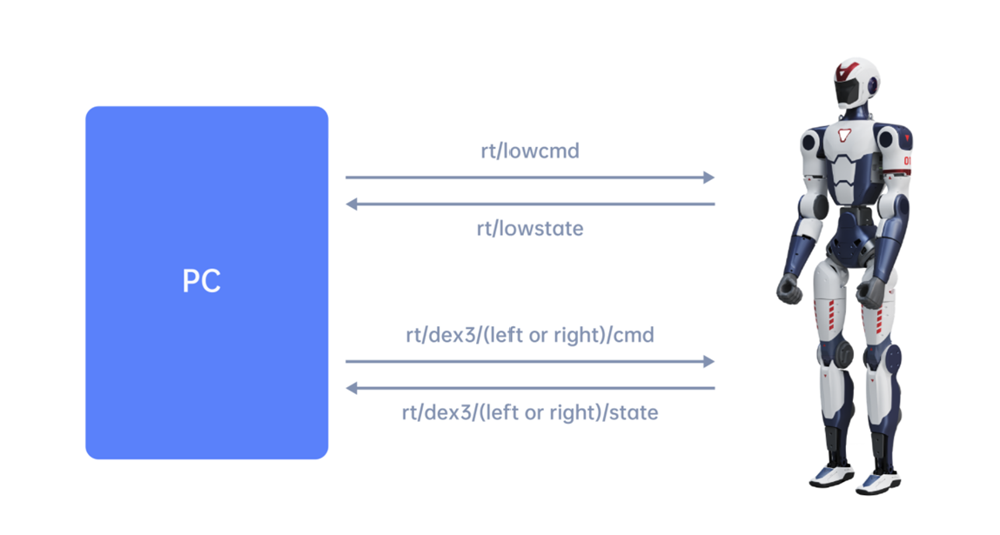
rt/lowcmd · rt/lowstate, 손 rt/dex3/…/cmd · …/state (Unitree 문서).| 구조체 (unitree_hg::msg::dds_) | 필드 (SDK 헤더 순서) |
|---|---|
IMUState_ | quaternion[4](w, x, y, z), gyroscope[3](각속도), accelerometer[3], rpy[3](오일러 각), temperature(int16) |
LowCmd_ | mode_pr(uint8, 0 PR · 1 AB, rt/arm_sdk에서는 가중치 0 ~ 100), mode_machine(uint8), motor_cmd[35], reserve[4], crc |
LowState_ | version[2], mode_pr, mode_machine, tick(1 ms마다 증가), imu_state, motor_state[35], wireless_remote[40], reserve[4], crc |
MotorCmd_ | mode(0 끄기, 1 사용), q(rad), dq(rad/s), tau(N·m 앞먹임), kp, kd, reserve |
MotorState_ | mode, q(rad), dq(rad/s), ddq(rad/s²), tau_est, temperature[2](표면 · 권선), vol, sensor[2], motorstate(8장), reserve[4] |
관절이 내는 토크는 τ = kp · (q목표 − q) + kd · (dq목표 − dq) + tau입니다 (q · dq는 측정값) 문서.
LowCmd_를 보낼 때는 2장의 Crc32Core로 crc를 채웁니다.
MotorCmd_.reserve: 문서reserve[3], SDK는uint32_t하나.MotorState_: 문서의q_raw·dq_raw·ddq_raw는 SDK에 없습니다.LowState_.version[2]는 문서에 없습니다.mode_machine주석의 "4: 23-Dof, 5: 29-Dof, 6: 27-Dof"와mode_pr주석의 "(발목과 허리)"는 G1 문구입니다 (2장).
보행 · 음성 · 영상 · SLAM 서비스
로봇에 내장된 서비스를 요청 / 응답으로 부르는 인터페이스입니다. 보행 · 팔 서비스는 내장 운동 제어 위에서 동작하므로 디버그 모드에서는 쓸 수 없습니다.
고수준 보행 LocoClient 문서 SDK
#include <unitree/robot/r1/loco/r1_loco_client.hpp> #include <unitree/robot/r1/loco/r1_loco_api.hpp> unitree::robot::r1::LocoClient client; client.Init(); client.SetTimeout(10.f);
서비스 이름은 ai_sport 1.0.2.0 이상에서 "sport", 그보다 낮으면 "loco"입니다 문서. SDK의 LOCO_SERVICE_NAME은 "sport", API 버전 1.0.0.0입니다.
| 함수 (SDK 원형) | 동작 |
|---|---|
int32_t Damp() | SetFsmId(1) 댐핑 |
int32_t ZeroTorque() | SetFsmId(0) 제로 토크 |
int32_t StandUp() | SetFsmId(4) 잠금 서기 (균형 제어 없음) |
int32_t Start() | SetFsmId(811) 주 운동 제어(걷기 · 달리기)로 전환 |
int32_t LieDown() | SetFsmId(702) 선 자세 → 누운 자세 |
int32_t GetUp() | StandUp() → 3초 대기 → SetFsmId(701) 누운 자세 → 선 자세 |
int32_t Move(float vx, float vy, float vyaw) | 속도 명령. 기본은 명령마다 1초 동안만 유효합니다. SwitchMoveMode(true) 뒤에는 지속 시간 864000 s로 보내 다음 명령까지 계속 움직입니다 |
int32_t Move(vx, vy, vyaw, bool continous_move) | 지속 여부를 직접 지정 |
int32_t SwitchMoveMode(bool flag) | 클라이언트 내부 플래그만 바꾸고 0을 돌려줍니다 (서버 호출 없음) |
int32_t StopMove() | SetVelocity(0, 0, 0) |
int32_t SetVelocity(float vx, float vy, float omega, float duration = 1.f) | API 7105. 앞(vx) · 옆(vy) 속도와 회전 속도(omega), 지속 시간(s). 예제 설명은 vx를 m/s로 씁니다. omega 단위는 문서에 없습니다 |
int32_t GetFsmId(int& fsm_id) · SetFsmId(int) | API 7001 · 7101. 현재 / 목표 FSM ID |
int32_t GetFsmMode(int& fsm_mode) | API 7002. 값의 의미는 문서에 없습니다 |
int32_t SetSpeedMode(int speed_mode) | API 7107. 값의 의미는 문서에 없습니다 |
| FSM ID | 모드 | 비고 |
|---|---|---|
| 0 | 제로 토크 | 균형 제어 없음 |
| 1 | 댐핑 | 균형 제어 없음 |
| 4 | 잠금 서기 | 균형 제어 없음 |
| 811 | 걷기 · 달리기 제어 | |
| 701 | 누운 자세 → 서기 | 먼저 잠금 서기 |
| 702 | 서기 → 누운 자세 |
| 오류 | 뜻 |
|---|---|
| 7301 | LocoState(상태 정보) 없음 |
| 7302 | 잘못된 FSM ID |
| 7303 | 잘못된 작업(task) ID |
| 7304 | FSM 전환 거부 |
모드 전환이 실제로 되는지는 내장 운동 제어의 전환 규칙이 정합니다. 균형 제어가 없는 모드(0 · 1 · 4)에서는 로봇이 넘어질 수 있으니 매단 상태에서 시험하십시오.
- 문서는
Move의 동작을 "ContinuousGait 함수로 바꾼다"고 적었지만 그런 함수는 없습니다.SwitchMoveMode(bool)입니다. LieDown()·GetUp()·GetFsmMode()·SetSpeedMode()·SwitchMoveMode()는 문서의 함수 표에 없습니다.LieDown·GetUp은 8e1b927보다 오래된 SDK에는 없습니다.- 문서의 "flight control system",
SetVelocity비고의 "adjust the image"는 번역 오류로 보이며 뜻이 분명하지 않습니다. 이 표는 SDK 코드가 하는 일만 적었습니다.
음성 · 조명 AudioClient 문서 SDK
| 장치 | 사양 |
|---|---|
| RGB 조명 | 256색 |
| 스피커 | 8 Ω, 3 W (최대 5 W), 좌우 하나씩 |
| 마이크 | 4개 배열, 간격 20 mm (선형에 가까운 배치, 실리콘 마이크) |
| 필요 버전 | Vui_Service 2.2.0.0 이상, Vui Module 2.0.0.3 이상 (낮으면 기술 지원에 업그레이드 요청) |
제공 기능: 음성 인식 ASR(기본 비스트리밍, 로컬 오프라인, 방위 · 감정 · 화자 정보 포함), 음성 합성 TTS(로컬 오프라인, 음성 선택), 오디오 스트림 재생, 볼륨, 조명 띠 색.
문서는 TTS가 "현재 중국어만 지원"한다고 적었지만, 같은 페이지의 표에 speaker_id 1(영어)이 있습니다. 음성 비서(호출어 · 대화 모드)의 사용법은 운용 설명서 8장에 있습니다.
헤더 unitree/robot/r1/audio/audio_client.hpp, 서비스 이름 "voice", API 버전 1.0.0.0 SDK.
| 함수 (API ID) | 내용 |
|---|---|
int32_t TtsMaker(const std::string& text, int32_t speaker_id) (1001) | 문장을 합성해 바로 재생. speaker_id 0 = 중국어, 1 = 영어. 두 언어를 섞을 수 없습니다. 요청마다 index가 1씩 늘어납니다 |
int32_t GetVolume(uint8_t& volume) (1005) · SetVolume(uint8_t volume) (1006) | 시스템 볼륨 0 ~ 100 |
int32_t LedControl(uint8_t R, uint8_t G, uint8_t B) (1010) | 조명 띠 색 0 ~ 255. 호출 간격은 200 ms보다 길어야 합니다 |
int32_t PlayStream(std::string app_name, std::string stream_id, std::vector<uint8_t> pcm_data) (1003) | PCM 재생. 16 kHz, 모노, 16비트. 같은 stream_id는 캐시에 이어 재생, 다른 ID는 현재 재생을 끊습니다 |
int32_t PlayStop(std::string app_name) (1004) | 재생 정지. SDK 구현은 결과와 상관없이 0을 돌려줍니다 |
| ASR (1002) | SDK가 API를 등록하지만 감싼 함수는 없습니다. 인식 결과는 아래 토픽으로 받습니다 |
앱이나 리모컨으로 호출 대기 모드를 켜면 내장 마이크와 ASR이 사람 목소리를 인식하고, rt/audio_msg(std_msgs::msg::dds_::String_)에 JSON으로 결과를 냅니다.
| 필드 | 형 | 뜻 | 필드 | 형 | 뜻 |
|---|---|---|---|---|---|
index | 정수 | 메시지 고유 순번 | sense | 문자열 | 감정 인식 결과 |
timestamp | 정수 | 타임스탬프 | confidence | 실수 | 신뢰도 |
text | 문자열 | 인식 결과 | language | 문자열 | 언어 (예: en-US) |
angle | 정수 | 방위각 0 ~ 180 | is_final | 정수 | 끝 표시 (스트리밍 모드용) |
speaker_id | 정수 | 화자 인식 결과 | play_state | 정수 | 재생 상태 0 정지 · 1 재생 (별도 JSON, 문서가 토픽을 밝히지 않음) |
예제 r1_audio_client_example <인터페이스> SDK: 볼륨 읽기 → 100으로 설정 → 중국어 · 영어 TTS → test.wav(16 kHz 모노만)를 96000바이트(3초) 조각으로 1초 간격 재생 →
조명 초록 → 끔 → 파랑 → 마이크 녹음. 녹음은 UDP 멀티캐스트 239.168.123.161 : 5555에 192.168.123.x 인터페이스로 가입해 16 kHz · 16비트 모노 PCM을 5초 받아 record.wav로 저장합니다.
음성 파일 경로가 ../example/r1/audio/test.wav이므로 build/에서 실행하십시오.
VuiClient Service 페이지의 예제는 G1의 unitree/robot/g1/audio/g1_audio_client.hpp와 example/g1/audio/test.wav를 씁니다. R1은 r1::AudioClient를 쓰십시오.
또 SDK 예제는 PlayStop(stream_id)처럼 앱 이름 자리에 스트림 ID를 넘깁니다. 직접 작성할 때는 PlayStream에 준 app_name을 넘기십시오.
영상 서비스 문서
R1 EDU 머리의 양안 모듈은 아래 영상을 냅니다. 받은 영상은 개발 연산 유닛(NX)에 화면을 연결하거나 NX의 NoMachine으로 봅니다.
| 영상 | 해상도 | 장치 · 전송 | UDP 포트 |
|---|---|---|---|
| img | 1280 × 720 | /dev/video-img, H.264 RTP | 5001 |
| 보정된 왼쪽 RGB | 544 × 448 · 10 fps | /dev/video-left, H.264 RTP | 5002 |
| 보정된 오른쪽 RGB | 544 × 448 · 10 fps | /dev/video-right, H.264 RTP | 5003 |
| 깊이 | 544 × 448 · 16비트 | /dev/video-dep (V4L2, 10 fps) | — |
| 왼쪽 원본 | 1280 × 1088 · 30 fps | JPEG RTP | 5004 |
| 오른쪽 원본 | 1280 × 1088 · 30 fps | JPEG RTP | 5005 |
| 필요 버전 | 이상 | 필요 버전 | 이상 |
|---|---|---|---|
| Patch (내부에서만 보임) | 1.0.1.17 | Stereo Patch PC1 | 0.4.0.4 |
| R1 Stereo Patch PC1 | 0.0.1.42 | System_patch_pc4 | 2.0.0.0 |
| R1 Stereo Patch X5 | 0.0.0.17 |
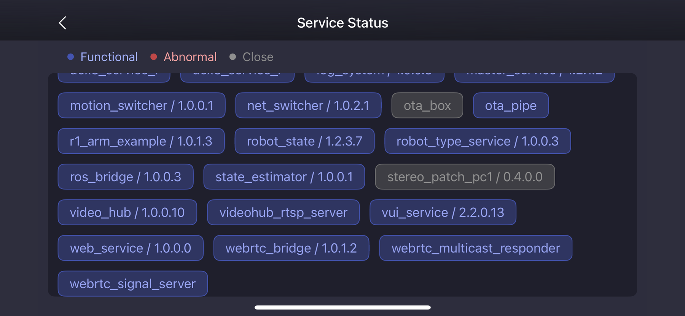
video_hub는 켜져 있고 stereo_patch_pc1은 꺼져 회색으로 보입니다 (Unitree 문서).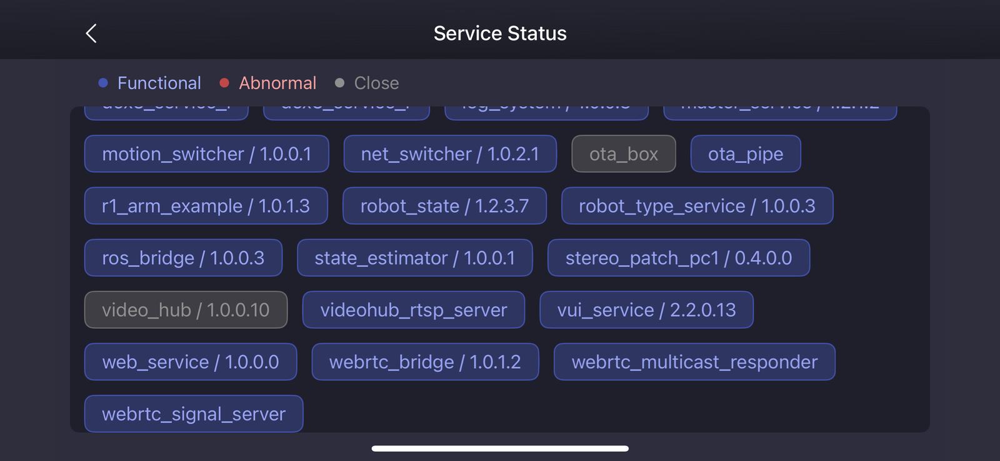
video_hub를 끄고 stereo_patch_pc1을 켠 뒤의 서비스 상태 화면 (Unitree 문서).- 스트리밍 시작앱에서 R1을 추가하고 [설정] → [서비스 상태]를 엽니다 (그림 8).
video_hub가 이 서비스와 충돌할 수 있으니 끄고, 자동으로 시작되지 않는Stereo patch PC1을 직접 켭니다 (그림 9). - H.264 영상 받기아래 명령에서 포트만 바꿔 씁니다. 해상도와 프레임을 확인할 때는 명령 끝을
fakesink -v 2>/dev/null | grep -E 'width|height|framerate'로 바꿉니다. 보정된 왼쪽 영상(포트 5002)이면width=(int)544,height=(int)448,framerate=(fraction)10/1이 나옵니다.
gst-launch-1.0 udpsrc port=5001 ! \ application/x-rtp,media=video,clock-rate=90000,encoding-name=H264,payload=96 ! \ rtph264depay ! avdec_h264 ! videoconvert ! autovideosink sync=false # JPEG 원본 (5004 왼쪽, 5005 오른쪽) gst-launch-1.0 udpsrc port=5004 ! \ application/x-rtp,media=video,clock-rate=90000,encoding-name=JPEG,payload=96 ! \ rtpjpegdepay ! jpegparse ! jpegdec ! videoconvert ! autovideosink sync=false # 깊이: 받기 시작 / 끝 (시작하면 "Depth camera capture running in background..."가 나옴) sudo unitree_depth_start sudo unitree_depth_stop ffplay -f v4l2 -framerate 10 -video_size 544x448 -i /dev/video-dep
Unitree 문서의 깊이 시각화 스크립트 depth16_show.py(NX의 ~/share/rdk/rdkx5/platform_samples_client/dep_img_send)는 16비트 깊이 값을 색으로 보여 줍니다.
키는 q 종료, s 현재 프레임 저장(PNG와 원시 .npy), c 색 지도 바꾸기, + · - 정규화 범위 조절입니다.
원시 깊이 값의 단위는 mm이며, 화면에는 1000으로 나눈 미터 값이 격자 교차점마다 표시됩니다. 0과 65535는 무효 깊이로 칠합니다.
출력 영상 설정과 보정 값
- 서비스 전환앱에서
video_hub를 끄고Stereo patch PC1을 켭니다 (그림 9). - 설정 페이지 열기NX 도크의 브라우저로
http://192.168.123.161:9080을 열고, 내보낼 영상을 켜거나 끕니다 (그림 10). 어떤 조합이든 되지만 하나 이상은 켜 두어야 합니다. - 저장과 동기화Save and Sync to Camera를 누르면 동기화 결과가 표시됩니다 (그림 11). 바꾼 설정은 전원을 껐다 켜야 적용됩니다.
- 보정 값 내려받기같은 페이지 아래의 Download cam_param.txt를 눌러
cam_param.txt를 내려받습니다. 카메라 내부 파라미터, 왜곡 계수, 양안 외부 파라미터가 들어 있습니다.
| 설정 페이지의 출력 | 해상도 · 프레임 | 비고 |
|---|---|---|
| 깊이 맵 | 544 × 448 · 10 fps | |
| 보정된 왼쪽 · 오른쪽 영상 | 544 × 448 · 10 fps | 따로 켜고 끔 |
| 잘라낸 오른쪽 영상 | 720 × 1280 · 15 fps · NV12 | 앱이 쓰는 영상. 끄면 앱에서 영상 미리보기가 되지 않음 |
| 왼쪽 · 오른쪽 원본 | 1280 × 1088 · 30 fps · MJPG |
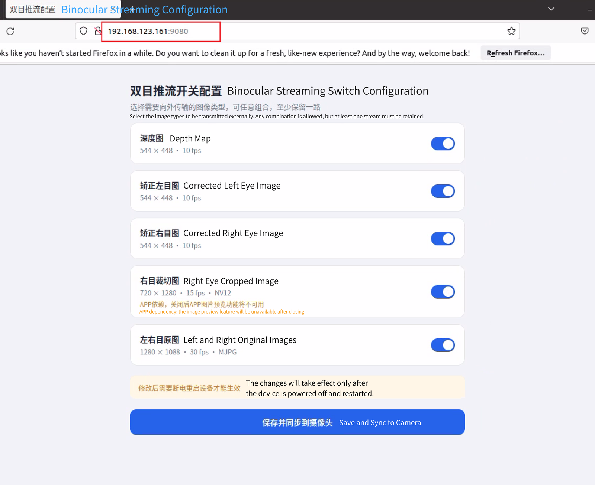
http://192.168.123.161:9080의 양안 출력 설정 페이지 (Unitree 문서).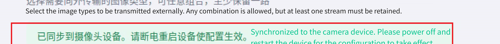
About R1은 RGB 최대 해상도를 1280 × 1080으로, 영상 서비스 문서는 img를 1280 × 720으로 적었습니다. 9080 설정 페이지에는 img 항목이 없고, 원본이 1280 × 1088로 나옵니다. SDK Overview는 "현재 버전은 GST 영상 스트리밍을 지원하지 않는다"고 적었지만, 영상 서비스 문서는 위 버전 이상에서 GStreamer 수신을 안내합니다. 납품 장비의 서비스 버전을 먼저 확인하십시오.
SLAM 내비게이션 문서
- R1-EDU + Mid360 라이다 구성만 지원합니다. 교육 · 연구용이며 산업 응용은 Unitree 영업에 문의합니다.
- 정적이고 평평하며 특징이 많은 실내, X · Y 45 m 이내에서 씁니다. 공중제비 같은 격한 동작은 라이다를 손상시키고 위치를 잃게 합니다.
- 라이다 동작 중 핫플러그를 금지합니다. 사용 전 원시 점군과 IMU 값이 정상인지, 머리가 정면 · 수직이고 헐겁지 않은지 확인합니다. 정지한 라이다로 정지한 수직면을 비출 때 점군이 층으로 갈라지거나 IMU 값이 이상하면 수리를 의뢰합니다.
점군과 위치의 원점은 Mid360 IMU 좌표계 원점이며, X는 로봇 정면, Z는 수직 위입니다. 개발 PC를 R1 내부 스위치에 직결하고 192.168.123.x로 설정한 뒤
ping 192.168.123.120(라이다) · ping 192.168.123.161(PC1)과 ssh unitree@192.168.123.164(NX)로 확인합니다.
서비스 이름 "slam_operate", 버전 1.0.0.1. 요청 인자와 응답은 모두 JSON이며, 응답은 {"succeed": bool, "errorCode": 0 = 정상, "info": 설명, "data": {}}입니다.
| API ID · 기능 | 요청 {"data": …} |
|---|---|
| 1801 지도 작성 시작 | {"slam_type": "indoor"} (고정값) |
| 1802 지도 작성 끝 | {"address": "/home/unitree/test.pcd"} 저장 경로. 디스크를 아끼려면 test1.pcd ~ test10.pcd로 이름을 정해 덮어쓰기를 권합니다 |
| 1804 자세 초기화 | {"x","y","z","q_x","q_y","q_z","q_w", "address": pcd 경로} |
| 1102 자세 내비게이션 | {"targetPose": {x, y, z, q_x, q_y, q_z, q_w}, "mode": 1} (mode 고정). 목표는 현재 위치에서 30 m 이내, 직선으로 이동합니다. 라이다 시야 때문에 장애물 높이는 50 cm 이상이어야 합니다 |
| 1201 일시 정지 · 1202 재개 | {} |
| 1901 SLAM 끄기 | {} |
| 토픽 | 형 · 내용 |
|---|---|
rt/unitree/slam_mapping/points · …/odom | 지도 작성 중 점군 sensor_msgs::msg::dds_::PointCloud2_ · 오도메트리 nav_msgs::msg::dds_::Odometry_ |
rt/unitree/slam_relocation/points · …/odom | 재위치 추정 중 점군 · 오도메트리 |
rt/unitree/slam_relocation/global_map | 전역 지도 점군. 재위치 시작 뒤 한 번만 보냅니다 |
rt/slam_info | std_msgs::msg::dds_::String_ 실시간 방송 JSON: type = robot_data · pos_info · mapping_info · ctrl_info |
rt/slam_key_info | String_ 실행 결과 JSON: type = task_result (targetNodeName, is_arrived) |
| JSON type | data 필드 (공통: errorCode, sec, nanosec, info) |
|---|---|
robot_data | motorTemp[] °C, motorError[], batteryAmp mA, batteryPower %, batteryTemp °C, batteryVol mV, sportMode · gaitType(지금은 -1), cpuTemp °C, cpuUsage %, cpuMemory %, cpuFrequency MHz |
pos_info · mapping_info | currentPose{x, y, z, q_x, q_y, q_z, q_w}, pcdName, address |
ctrl_info | targetNodeName, is_arrived, startPose · targetPose{x, y, z, roll, pitch, yaw}, stateMachine{state, isOpenPlan, isBack, isClimbStairs, isRotate, isPause, ctrName, vx, vy, vyaw},
obsInfo{state = 장애물, time = 누적 s}, progress{used_time, last_time, completion_percentage} |
# NX(192.168.123.164)에 Unitree Slam 패키지(2026-06-04 "R1-EDU Mid360") 설치: 압축을 풀고 설치 스크립트 실행 cd /unitree/module/unitree_slam/bin export LD_LIBRARY_PATH=/unitree/module/unitree_slam/lib:$LD_LIBRARY_PATH # .bashrc에 넣어도 됨 ./unitree_slam # 서비스 ./mid360_driver # 다른 터미널: 라이다 ./keyDemo eth10 # 다른 터미널: 데모
- 데모 소스는
/unitree/module/unitree_slam/example, rviz2 설정은/unitree/module/unitree_slam/rviz2에 있습니다. - 지도를 만들 때 로봇을 빠르게 움직이지 마십시오. 도크 PC의 자원이 적으므로 SLAM 중에는 rviz2 같은 무거운 프로그램을 켜지 마십시오.
고수준 제어
내장 운동 제어가 균형을 잡는 동안 보행 명령을 보내거나(r1_loco_client), 상체만 덧씌워 제어하거나(rt/arm_sdk),
내장 팔 동작을 실행합니다(팔 동작 서비스). 셋 다 디버그 모드에서는 동작하지 않습니다.
보행 예제 r1_loco_client 문서 SDK
소스 example/r1/high_level/r1_loco_client_example.cpp, 실행 파일 build/bin/r1_loco_client(문서 표기 unitree_sdk2/bin/r1_loco_client).
디버그 모드에 들어가지 않고 실행합니다. 값이 있는 인자는 --키=값 또는 --키="값", 값이 없으면 --키.
| 인자 | 동작 (예) |
|---|---|
--network_interface | 인터페이스 이름 (예: enp3s0). 생략하면 lo |
--get_fsm_id · --get_fsm_mode | 현재 FSM ID · FSM 모드 출력 |
--set_fsm_id=1 | FSM ID 설정 |
--set_velocity="0.5 0 0 1" | vx vy omega [duration]. duration 생략 시 1 s |
--move="0.5 0 0" | Move(vx, vy, omega) |
--switch_move_mode=true | 연속 이동 플래그 (아래 순서 주의) |
--set_speed_mode=N | SetSpeedMode(N) |
--damp · --start · --stand_up · --zero_torque · --stop_move | 각 함수 호출 |
--lie_down · --get_up | LieDown() · GetUp() (8e1b927에만 있음) |
./build/bin/r1_loco_client --network_interface=enp3s0 --set_velocity="0.5 0 0 1" # x 방향 0.5 m/s로 1초
예제는 인자를 std::map에 담아 순회하므로 키 이름의 사전순으로 실행합니다. 예를 들어 --switch_move_mode=true --move="0.3 0 0"은
move가 먼저 실행되어 1초짜리 이동이 되고, 그 뒤에 플래그가 바뀝니다. 순서가 중요한 명령은 따로 실행하십시오.
문서에 주석 처리된 --set_balance_mode · --set_swing_height · --set_stand_height 등은 예제에 없습니다.
팔 제어 arm_sdk 문서 SDK
rt/arm_sdk에 unitree_hg::msg::dds_::LowCmd_를 발행하면 팔 · 허리 요 · 머리를 직접 제어하고, 하체 균형은 내장 제어가 계속 잡습니다.
상태는 rt/lowstate에서 읽습니다. 미리 정해진 동작만 필요하면 이 인터페이스 대신 아래의 팔 동작 서비스를 부르십시오.
arm_sdk는 관절 한계 · 충돌 검사를 전혀 하지 않습니다. 목표 위치는 전적으로 프로그램 책임이며, 명령은 연속적이고 부드러워야 합니다.- 이 인터페이스를 쓰는 동안 팔 동작 서비스 API를 부르지 마십시오. 둘이 상체 제어권을 다툽니다 (서비스는 7400을 돌려줍니다).
제어 가중치 mode_pr
| 가중치 (mode_pr) | 뜻 |
|---|---|
| 0.0 (0) | 상체를 내장 제어가 모두 맡습니다. arm_sdk 명령은 효과가 없습니다 |
| 0.0 ~ 1.0 | 사용자 명령과 내장 제어를 가중치로 섞습니다 |
| 1.0 (100) | 상체 제어권을 프로그램이 모두 가집니다 |
R1은 가중치를 LowCmd_.mode_pr(0 ~ 100)에 담습니다. 특정 관절 명령에 가중치를 쓰는 모델(G1은 motor_cmd[29].q)과 다르며, R1의 29번은 머리 피치입니다.
SDK의 r1::publisher::ArmSdk(dds_wrapper/robots/r1/r1_pub.h)가 weight(float) = mode_pr = clamp(int(w·100), 0, 100), weight() = mode_pr / 100으로 감쌉니다 SDK.
- 잡기: 가중치를 1.0으로 올리기 전에 모든 관절 목표를 현재 측정 위치로 채우고 게인을 씁니다. 넘겨받는 순간 튀지 않게 합니다.
- 놓기: 1.0에서 0.0으로 한 번에 내리지 마십시오. 약 1초에 걸쳐 직선으로 내리며 그동안 100 Hz로 계속 발행합니다. 한 번에 내리면 팔이 버티는 힘을 잃고 떨어집니다.
관절과 게인
| 순서 | JointIndex | IDL | KP | KD | 순서 | JointIndex | IDL | KP | KD |
|---|---|---|---|---|---|---|---|---|---|
| 0 | LeftShoulderPitch | 15 | 50 | 2 | 5 | RightShoulderPitch | 22 | 50 | 2 |
| 1 | LeftShoulderRoll | 16 | 50 | 2 | 6 | RightShoulderRoll | 23 | 50 | 2 |
| 2 | LeftShoulderYaw | 17 | 40 | 2 | 7 | RightShoulderYaw | 24 | 40 | 2 |
| 3 | LeftElbow | 18 | 40 | 2 | 8 | RightElbow | 25 | 40 | 2 |
| 4 | LeftWristRoll | 19 | 30 | 2 | 9 | RightWristRoll | 26 | 30 | 2 |
| 10 | WaistYaw | 13 | 50 | 3 | 11 · 12 | HeadPitch · HeadYaw | 29 · 30 | 15 | 1 |
순서는 ArmSdk::JOINTS(13개)이고, 게인은 내장 팔 동작 서비스가 쓰는 값으로 예제의 KP · KD와 같습니다. 허리는 요만 제어할 수 있고 허리 롤과 다리는 내장 제어 전용이라 명령해도 효과가 없습니다.
같은 번호로 rt/lowstate의 q, dq, motorstate를 읽습니다. 각 관절에는 q(rad), kp, kd, dq(rad/s, 위치 제어면 0), tau(N·m, 위치 제어면 0)를 씁니다.
KP가 너무 크면 떨림과 오버슈트, 너무 작으면 늦게 따라가고 끝이 처집니다. KD는 떨림을 줄이지만 지나치면 끈적하고 고주파 진동이 생길 수 있습니다.
손으로 끌어 가르칠 때는 KP를 한 자리 ~ 10대 초반으로 크게 낮추고 tau에 중력 보상 토크를 더합니다.
2026년 8월 WeGo 개발 중 G1용 허리 게인(kp 300, kd 3)이 R1의 머리와 허리 요에 잘못 전달되어, 공식값의 20배 게인이 걸린 머리가 큰 소음을 낸 뒤 모터 과열 보호로 멈췄습니다(다른 손상 없음). G1 코드를 옮길 때는 관절 번호와 게인을 R1 값으로 바꾸십시오. 머리 · 허리에서 큰 소음이 나면 프로그램을 멈추고 위 게인 이하로 낮춥니다.
제어 흐름과 예제
- 잡기weight = 1.0, 모든
q를 측정 위치로, kp · kd 쓰기. - 명령100 Hz(10 ms마다)로 목표 위치를 발행합니다. 먼 목표로 바로 뛰지 말고 보간하거나 궤적을 계획합니다. 움직이는 동안
rt/lowstate로 추종 오차와motorstate를 보고, 0이 아니면 즉시 멈추고 놓습니다. - 놓기1초에 걸쳐 weight를 0.0으로, 100 Hz 발행 유지. 프로그램을 끝내기 전에 반드시 놓습니다. weight 1.0인 채로 프로그램이 죽으면 상체는 마지막 명령 자세에 머뭅니다.
r1_arm_sdk_dds_example <인터페이스>(8e1b927, fmt 필요)의 ArmController는 rt/lowstate 연결을 기다린 뒤
enable()(weight 1, 현재 위치 · 게인 채우기) → movej(q_target, max_vel = 1.0)(가장 많이 움직이는 관절이 1 rad/s가 되도록 시간을 정해 10 ms 간격 선형 보간) →
release(1.0)(1초 동안 weight 1 → 0, 10 ms 간격)을 실행합니다. 목표는 왼팔 {0, 1.57, 0, 1.57, 0}, 오른팔 {0, -1.57, 0, -1.57, 0}, 허리 요 0, 머리 피치 0, 머리 요 1.0 rad입니다.
팔 동작 서비스 문서 SDK
R1에 내장된 상체 상호작용 동작과, 가르치기로 녹화한 사용자 동작을 실행 · 관리합니다. 서비스 이름 "arm" → 토픽 rt/api/arm/request · rt/api/arm/response, 요청 · 응답은 JSON,
API 버전 1.0.0.0(서버는 아직 검사하지 않음). R1ArmActionClient는 SDK 헤더가 아니라 예제 파일 r1_arm_action_example.cpp 안에만 있으며 Client 기반 클래스만 씁니다.
G1의 g1_arm_action_client.hpp는 서비스 이름 · API ID가 같아도 동작 ID 목록과 오류 코드가 달라 쓰면 안 됩니다.
./build/bin/r1_arm_action_example eth0 --list # 동작 목록 ./build/bin/r1_arm_action_example eth0 --id 27 # 미리 정한 동작 (악수) ./build/bin/r1_arm_action_example eth0 --id 99 # 팔 놓기 ./build/bin/r1_arm_action_example eth0 --name my_action # 사용자 동작 ./build/bin/r1_arm_action_example eth0 --stop # 사용자 동작 정지
| API ID · 함수 | 요청 · 내용 |
|---|---|
7106 ExecuteAction(int32_t action_id) | 요청 {"action_id": 27}. 미리 정한 동작. 블로킹: 재생이 끝나야 돌아오므로 시간 제한을 동작 길이보다 길게(10 s 권장) |
7108 ExecuteAction(const std::string& action_name) | 요청 {"action_name": "my_action"}. 사용자 동작(대소문자 구분). 논블로킹, 끝나면 팔을 자동으로 놓습니다 |
7113 StopCustomAction() | 요청 인자 없음. 사용자 동작 정지, 팔은 처음 자세로. 재생 중이 아니어도 0 |
7107 GetActionList(std::string& data) | 요청 인자 없음. [[{"id":99,"name":"release_arm"}, …], [{"name":"my_action","time":12.3}]]. 미리 정한 항목에 fsm이 있으면 특정 제어 상태에서만 실행됩니다. 서버 응답이 기준입니다 |
| ID | 이름 | 동작 | 길이 s | 유지 |
|---|---|---|---|---|
| 99 | release_arm | 팔을 처음 자세로 | — | |
| 11 | blow_kiss_with_both_hands | 두 손 키스 | 3.0 | |
| 12 | blow_kiss_with_left_hand | 왼손 키스 | 3.0 | |
| 13 | blow_kiss_with_right_hand | 오른손 키스 | 3.0 | |
| 15 | both_hands_up | 두 팔 어깨 높이로 | 1.0 | O |
| 17 | clamp | 박수 | 2.2 | |
| 18 | high_five | 하이파이브 | 1.0 | O |
| 19 | hug | 포옹 | 2.0 | O |
| 22 | refuse | 두 팔 X자 (거절) | 0.9 | O |
| 23 | right_hand_up | 오른팔 어깨 높이로 | 1.0 | O |
| 24 | ultraman_ray | 울트라맨 광선 자세 | 2.1 | O |
| 25 | wave_under_head | 가슴 앞 손 흔들기 | 2.6 | |
| 26 | wave_above_head | 머리 위 손 흔들기 | 5.7 | |
| 27 | shake_hand | 악수 | 1.0 | O |
| 28 | box_left_hand_win | 복싱 승리 (왼손) | 1.0 | O |
| 29 | box_right_hand_win | 복싱 승리 (오른손) | 1.0 | O |
| 30 | box_both_hand_win | 복싱 승리 (두 손) | 2.5 | O |
| 31 | extend_right_arm_forward | 오른팔 앞으로 | 1.0 | O |
| 33 | right_hand_on_heart | 오른손 가슴에 | 1.6 | O |
| 34 | both_hands_up_deviate_right | 두 팔 들기, 오른쪽으로 | 1.0 | O |
| 35 | emphasize | 강조 몸짓 | 0.6 | O |
| 36 | forward_push | 앞으로 밀기 | 1.5 | O |
동작 ID는 펌웨어와 함께 바뀌므로 GetActionList로 확인하십시오. "유지" 동작은 끝난 뒤 마지막 자세를 붙들며(holding), 이때 다른 ID는 7401로 거부됩니다.
99 또는 지금 유지 중인 같은 ID를 보내면 처음 자세로 돌아갑니다. 유지는 최대 20초 뒤 자동으로 풀립니다.
서비스는 현재 상태를 rt/arm/action/state에 10 Hz JSON {"holding": bool, "id": 번호, "name": 이름}으로 냅니다 (사용자 동작 재생 중 id = 100, 가르치는 중 -1).
| 오류 | 뜻 · 조치 |
|---|---|
| 7399 | 서버 내부 오류 |
| 7400 | 다른 프로그램이 rt/arm_sdk로 상체를 제어 중이거나 다른 동작이 실행 중 |
| 7401 | 팔이 마지막 자세를 유지 중. 99 또는 같은 ID로 놓은 뒤 다시 |
| 7402 | 잘못된 동작 ID. --list로 확인 |
| 7403 | 동작 파일 읽기 실패. 사용자 동작 API에서는 대개 그 이름의 동작이 없다는 뜻 |
| 7404 | 현재 제어 상태에서 실행할 수 없음. 걷기 · 달리기 중 일부 동작 불가, 디버그 모드에서는 모두 불가 |
| 7405 | 같은 이름의 사용자 동작이 이미 있음 (이름 바꾸기) |
| 7406 | 배터리 부족. 6% 아래면 요청을 거부하고 실행 중인 동작도 멈춥니다 |
| 7407 | 모터 오류 상태라 안전을 위해 거부 |
| 3103 · 3104 · 3204 | API 미등록 · 시간 초과 · 요청 인자 오류 (RPC 공통, 8장) |
가르치기 API 문서
가르치는 동안 상체는 낮은 강성 모드가 되어 손으로 끌 수 있고, 서비스가 궤적을 100 Hz로 기록해 사용자 동작으로 저장합니다. 가르치기 전체 흐름은 앱에 구현되어 있습니다. 직접 부를 때는 팔이 중력으로 떨어지지 않게 옆에서 받쳐 주십시오. 아래 API는 SDK 예제의 클라이언트에 등록되어 있지 않습니다(7106 · 7107 · 7108 · 7113만 등록) — 쓰려면 직접 등록해야 합니다.
| API ID | 요청 · 동작 |
|---|---|
| 7110 가르치기 | 시작 {"action_name": "my_action"}, 유지 · 끝은 빈 문자열 "". 논블로킹. 시작 뒤 1초마다 빈 인자로 하트비트를 보내야 하며, 10초 넘게 없으면 실패로 끝냅니다.
한 번에 최대 180초, 넘으면 자동 저장. 이름은 a-z A-Z 0-9 _ - :만(어기면 끝낼 때 3204로 저장 실패), 같은 이름은 말없이 덮어씁니다.
기록 관절: 팔 5 × 2, 허리 요, 머리 피치 · 요 |
| 7111 일시 정지 | {"pause": true} / {"pause": false} (생략 불가). 정지 중 자세 변화는 기록하지 않습니다. 바로 0을 돌려줍니다 |
| 7109 이름 바꾸기 | {"pre_name": "old", "new_name": "new"}. 원래 동작이 없으면 7403, 새 이름이 있으면 7405 |
| 7112 삭제 | {"action_name": "my_action"}. 없으면 7403 |
직접 만든 팔 동작은 이 서비스를 끄지 않고 rt/arm_sdk로 보내면 됩니다. 서비스의 동작 API를 부르지 않는 한 서비스는 상체 제어권을 가져가지 않습니다.
ROS 2와 DDS 예제
R1의 하부 통신은 DDS이므로 ROS 2 메시지로 SDK를 거치지 않고 바로 통신 · 제어할 수 있습니다 (Go2 · B2 · H1 · G1 · R1 지원).
이 장은 unitree_ros2 설정과 SDK의 DDS 발행 · 구독 예제를 다룹니다.
ROS 2 설정 문서
| 시험된 시스템 | ROS 2 |
|---|---|
| Ubuntu 20.04 | foxy |
| Ubuntu 22.04 | humble |
저장소의 예제는 foxy로 개발되었습니다. 다른 배포판은 명령의 foxy를 바꾸고, rosbag 같은 API 차이는 ROS 2 공식 문서로 맞추십시오.
로봇의 CycloneDDS 버전은 0.10.2이므로 ROS 2의 DDS 구현을 바꿔야 합니다.
- 저장소
git clone https://github.com/unitreerobotics/unitree_ros2. 작업 공간은cyclonedds_ws이며, 메시지는cyclonedds_ws/src/unitree/아래unitree_go·unitree_api등에 있습니다. - 의존성
sudo apt install ros-foxy-rmw-cyclonedds-cpp ros-foxy-rosidl-generator-dds-idl. 편의를 위해unitree_sdk2설치도 권장합니다. - CycloneDDS 빌드ROS 2 환경을 source하지 않은 새 터미널에서 합니다.
~/.bashrc에source /opt/ros/foxy/setup.bash가 있으면 주석 처리합니다.
cd ~/unitree_ros2/cyclonedds_ws/src
git clone https://github.com/ros2/rmw_cyclonedds -b foxy
git clone https://github.com/eclipse-cyclonedds/cyclonedds -b releases/0.10.x
cd .. && colcon build --packages-select cyclonedds
# 그다음 ROS 2를 source하고 나머지 패키지 빌드
source /opt/ros/foxy/setup.bash && colcon build
- 네트워크로봇과 PC를 랜 케이블로 잇고
ifconfig로 인터페이스 이름을 확인합니다. IPv4를 수동으로 바꿔192.168.123.99/255.255.255.0으로 지정합니다. - setup.sh
~/unitree_ros2/setup.sh의 인터페이스 이름을 내 것으로 바꿉니다 (아래). 매번source ~/unitree_ros2/setup.sh를 하거나~/.bashrc에 넣되, ROS 환경이 여럿이면 주의합니다. - 확인설정 뒤 PC를 다시 시작하기를 권합니다.
source ~/unitree_ros2/setup.sh후ros2 topic list로 로봇 토픽이 보이면 연결된 것입니다.
#!/bin/bash
echo "Setup unitree ros2 environment"
source /opt/ros/foxy/setup.bash
source $HOME/unitree_ros2/cyclonedds_ws/install/setup.bash
export RMW_IMPLEMENTATION=rmw_cyclonedds_cpp
export CYCLONEDDS_URI='<CycloneDDS><Domain><General><Interfaces>
<NetworkInterface name="enp3s0" priority="default" multicast="default" />
</Interfaces></General></Domain></CycloneDDS>'
DDS 발행 · 구독 예제 문서 SDK
| 실행 파일 (build/bin) | 소스 | 동작 |
|---|---|---|
test_publisher | example/helloworld/publisher.cpp | 토픽 TopicHelloWorld에 HelloWorldData::Msg(현재 ms, "HelloWorld.")를 1초마다 발행 |
test_subscriber | example/helloworld/subscriber.cpp | 같은 토픽을 구독(큐 1)해 userID · message 출력. 5초 뒤 CloseChannel(), 3초 뒤 InitChannel()로 직전 인자로 다시 엽니다 |
DDS Communication Routine 페이지의 코드는 Init(0, argv[1])로 인터페이스를 받지만, SDK 소스와 DDS Services Interface 페이지의 코드는 ChannelFactory::Instance()->Init(0)입니다(인자 없이 실행, 인터페이스 자동 선택).
로봇과 통신할 때는 2 · 6장 예제처럼 인터페이스를 주십시오.
오류 코드와 정의
Unitree Common Mistakes and Definitions 페이지의 장치 상태 · 모터 상태 비트 표와, 각 서비스의 오류 코드를 모았습니다. 비트 값은 여러 개가 함께 켜질 수 있으므로 비트 AND로 확인합니다. 뜻은 Unitree 영문 원문을 옮긴 것이며, 원문이 모호한 항목(장치 0x200 ~ 0x800의 "하한 · 상한 보호")은 원문 표현을 그대로 살렸습니다.
장치 전체 상태 비트 문서
| 비트 | 뜻 |
|---|---|
| 0x1 | 상위 제어 명령 오류 |
| 0x2 | 하위 계층 피드백 데이터 시간 초과 |
| 0x4 | IMU 피드백 시간 초과 |
| 0x8 | 모터 피드백 시간 초과 |
| 0x10 | 배터리 피드백 시간 초과 |
| 0x20 | Unitree 실물 리모컨 피드백 시간 초과 |
| 0x40 | 배터리 모델 오류 |
| 0x80 | 소프트 스타트 오류 |
| 0x100 | 모터 상태 오류 |
| 0x200 | 모터 과전류 보호 (하한 보호 동작) |
| 비트 | 뜻 |
|---|---|
| 0x400 | 모터 저전압 보호 (상한 보호 동작) |
| 0x800 | 모터 과전류 보호 (상한 보호 동작) |
| 0x1000 | 소프트 비상 정지가 눌림 |
| 0x2000 | 일련번호 오류 |
| 0x4000 | 상위 모델 오류 |
| 0x8000 | 하위 모델 오류 |
| 0x10000 | USB 장치 오류 |
| 0x40000 | 골반 IMU 데이터 시간 초과 |
| 0x80000 | 메인보드 판단 배터리 저전압 보호 |
| 0x100000 | 메인보드 판단 모터 저전압 보호 |
모터 상태 비트 문서
| 비트 | 뜻 |
|---|---|
| 0x1 | 과전류 |
| 0x2 | 순간 과전압 |
| 0x4 | 지속 과전압 |
| 0x8 | 순간 저전압 |
| 0x10 | 칩 과열 |
| 0x20 | MOS 과열 · 과랭 |
| 0x40 | MOS 온도 이상 |
| 0x80 | 외함 과열 · 과랭 |
| 0x100 | 외함 온도 이상 |
| 0x200 | 권선 과열 |
| 0x400 | 회전자 엔코더 1 오류 |
| 비트 | 뜻 |
|---|---|
| 0x800 | 회전자 엔코더 2 오류 |
| 0x1000 | 출력 엔코더 오류 |
| 0x2000 | 보정 · BOOT 데이터 오류 |
| 0x4000 | 비정상 리셋 |
| 0x8000 | 모터 잠김, 마스터 인증 오류 |
| 0x10000 | 칩 검증 오류 |
| 0x20000 | 보정 모드 경고 |
| 0x40000 | 통신 검증 오류 |
| 0x80000 | 드라이버 버전 낮음 |
| 0x40000000 | 모터 쪽 판단: PC 연결 시간 초과 |
| 0x80000000 | PC 쪽 판단: 모터 연결 끊김 |
문서 원본은 0x800 ~ 0x4000 행을 두 번 실었고, 장치 상태 표에는 0x20000이 없습니다. 위 표는 중복을 지웠습니다.
문서는 이 표를 어느 필드에서 읽는지 밝히지 않습니다. Dex3-1 문서는 HandState_.error를 이 모터 상태 표로 안내하며, SDK 예제는 MotorState_.motorstate가 0이 아니면 오류로 출력합니다.
오류 코드 찾아보기 문서 SDK
| 범위 | 출처 | 코드 |
|---|---|---|
| 3001 ~ 3107 | RPC 클라이언트 쪽 | 3001 알 수 없음 · 3102 요청 보내기 오류 · 3103 API 미등록 · 3104 요청 시간 초과 · 3105 요청 · 응답 불일치 · 3106 잘못된 응답 데이터 · 3107 잘못된 임대 |
| 3201 ~ 3207 | RPC 서버 쪽 | 3201 응답 보내기 오류(클라이언트에는 오지 않음) · 3202 서버 내부 오류 · 3203 서버에 API 없음 · 3204 API 인자 오류 · 3205 임대로 거부 · 3206 서버에 임대 없음 · 3207 임대가 이미 있음 |
| 5201 ~ 5204 | RobotStateClient (4장) | 5201 서비스 전환 실행 오류 · 5202 보호된 서비스(켜고 끌 수 없음) · 5203 저전력 전환 오류 · 5204 저전력 상태 오류 (5203 · 5204는 SDK에만) |
| 7001 ~ 7009 | MotionSwitcherClient (2장, SDK) | 7001 인자 · 7002 사용 중 · 7003 이벤트 · 7004 · 7005 이름 · 7006 확인 실행 · 7007 선택 실행 · 7008 해제 실행 · 7009 사용자 데이터 저장 오류 |
| 7301 ~ 7304 | LocoClient (5장) | 7301 상태 정보 없음 · 7302 잘못된 FSM ID · 7303 잘못된 작업 ID · 7304 FSM 전환 거부 |
| 7399 ~ 7407 | 팔 동작 서비스 (6장) | 7399 내부 · 7400 점유 · 7401 유지 중 · 7402 ID · 7403 파일 · 7404 상태 · 7405 이름 중복 · 7406 배터리 · 7407 모터 |
| 100 | AudioClient (SDK) | UT_ROBOT_AUDIO_ERR_COMM "Invalid parameter" |
EDU 확장
개발 연산 유닛(백팩) 설치, 몸통 설치 구멍, 백팩 시스템의 백업과 복구, 다관절 손 설치를 다룹니다. 설치 절차는 Unitree 교육 영상의 자막과 화면에서 옮겼으며, 작업 전에 해당 영상을 함께 보십시오.
개발 연산 유닛(백팩) 설치 문서
R1-EDU는 등에 개발 연산 유닛을 달 수 있습니다. 개발자는 이 유닛(192.168.123.164)에서만 2차 개발을 합니다. 공장 기본 계정은 unitree / 123입니다.
교육 영상: Installation of R1 EDU Backpack (support.unitree.com/home/en/R1_developer/edu_backpack).
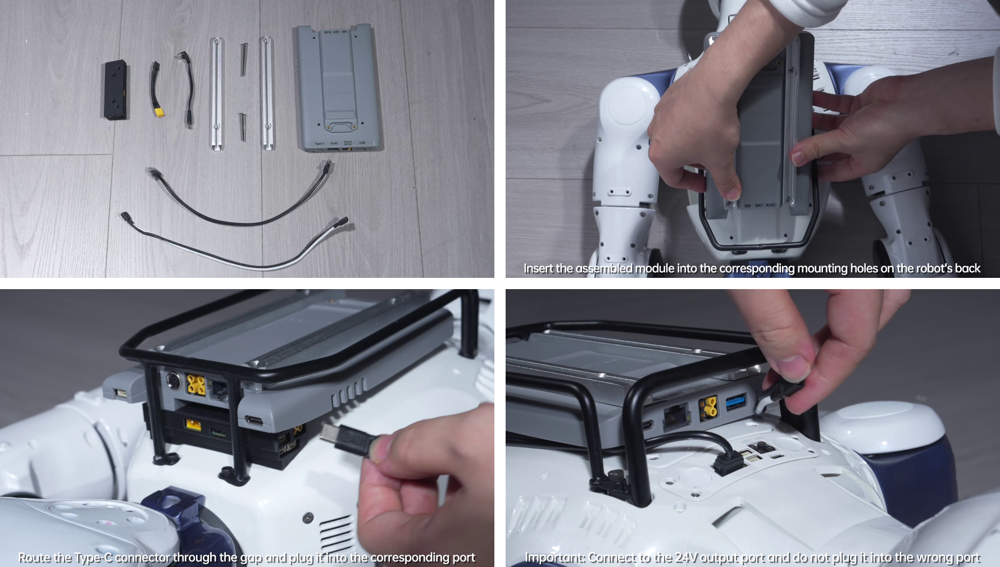
- 긴 나사M3 × 50 접시머리 나사(긴 것)를 끼웁니다.
- 손 확장 모듈다관절 손 확장 모듈을 설치합니다.
- 몸에 끼우기조립한 모듈을 로봇 등의 해당 장착 구멍에 끼웁니다.
- 짧은 나사M3 × 40 접시머리 나사(짧은 것) 두 개를 끼웁니다. 나사 네 개는 전동 공구의 가장 낮은 토크로 조이거나 손으로 조입니다.
- Type-CType-C 커넥터를 틈으로 지나게 해 해당 포트에 꽂습니다.
- 전원전원 커넥터를 틈으로 지나게 해 꽂습니다. 반드시 24 V 출력 포트에 연결하고 다른 포트에 꽂지 마십시오. (24 V / 36 V 출력은 운용 설명서 3장의 상단 인터페이스)
설치 구멍 문서
몸통의 설치 구멍은 M4 나사 구멍입니다(단위 mm). 교육 영상: Installation Hole Instructions and Usage (…/R1_developer/installation). 가슴 앞 설치 구멍을 쓰려면 다음 순서로 구멍을 엽니다.
- 나사 풀기앞쪽의 목 고정 나사 2개, 뒤쪽의 어깨 고정 나사 2개, 옆쪽의 허리 고정 나사 4개를 풉니다 (그림 14).
- 드릴앞판 안쪽에서 3.3 mm 드릴로 나사 구멍을 뚫습니다.
- 탭앞판 안쪽에서 M4 탭으로 기존 M4 나사산을 따라 끝까지 탭을 냅니다. 나사산을 망가뜨리지 않게 주의합니다.
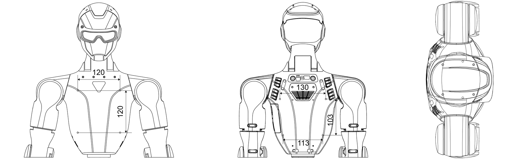
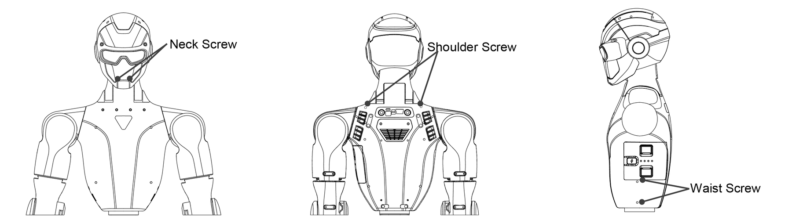
백팩 시스템 백업과 복구 문서
백업하려면 도크 안의 NVMe 드라이브를 꺼내야 합니다. 이 과정에서 생긴 손상은 무상 보증에서 제외됩니다. dd와 복구 스크립트는 대상 디스크를 지웁니다.
장치 이름은 매번 lsblk로 확인하십시오. 모든 작업은 root 권한이 필요합니다.
받은 즉시 백업해 두기를 권합니다. 준비물: 시스템이 든 NVMe(도크의 것을 써도 되나 주의), NVMe 카드 리더, PC.
| 작업 | 명령 (예: 장치 /dev/sdc) |
|---|---|
| 장치 확인 | lsblk -f (카드 리더로 꽂은 NVMe, 예: ext4) |
| 백업 | sudo dd if=/dev/sdc status=progress | bzip2 > nx.img.bz2. 끝나면 PC에서 디스크를 뺍니다 |
| 새 디스크 포맷 | sudo mkfs -t ext4 /dev/sdc (처음 쓰는 디스크만) |
| 복구 | bzip2 -dc nx.img.bz2 | sudo dd of=/dev/sdc status=progress. 여유 공간 300 GB 이상, 4 ~ 5시간 걸릴 수 있습니다. Windows에서는 Rufus로도 씁니다 |
Unitree 공장 이미지로 복구
| 항목 | 내용 |
|---|---|
| 이미지 | Unitree 문서의 Google Drive 링크. NX 도크(100 TOPS) r1_nx_img_jetpack5.1.1_v2603.tar.gz · Nano 도크(40 TOPS) r1_nano_img_jetpack5.1.1_v2603.tar.gz |
| 준비 | NVMe SSD 외장 케이스. 굽는 PC는 x86 Ubuntu 20.04 / 22.04 / 24.04 (가상 머신 불가).
sudo apt install -y partclone gawk gzip parted util-linux udisks2. 복구 스크립트 disk_recovery.sh(문서의 zip) |
sudo tar -xvpf r1_nx_img_jetpack5.1.1_v2603.tar.gz # 풀면 disk_backups/ 가 나옴 # disk_recovery.sh 를 disk_backups 와 같은 폴더(r1/)에 둔 뒤 cd r1/ && chmod +x disk_recovery.sh && sudo ./disk_recovery.sh
스크립트에서 ① 이미지 번호를 입력하고 ② 대상 디스크 이름을 직접 입력(lsblk로 확인)한 뒤 ③ y로 지우기를 확인합니다. 약 10분 뒤 완료 메시지가 나옵니다.
다관절 손 설치 문서
Unitree 문서의 EDU Expansion › Dexterous Hand Installation 아래 페이지는 모두 교육 영상만 있습니다. 영상마다 자막으로 안내하는 첫 단계는 기본으로 달린 의수형 손(prosthetic hand)을 떼어 내는 것입니다. 나머지 조립은 영상 화면을 따르고, 소프트웨어 설정은 3장을 보십시오.
| 영상 페이지 | 손 | 설치 뒤 소프트웨어 (3장) |
|---|---|---|
| Dex1-1 Installation | Dex1-1 | 앱에서 손 모델 선택 → 재부팅 → IDL 31 · 33 |
| Dex2/5 Installation | Dex2/5 | 앱에서 손 모델 선택 → 재부팅 → IDL 31 ~ 34 (토크 제어) |
| Dex3-1 Installation | Dex3-1 | rt/dex3/… |
| LinkerHand O6 Installation | LinkerHand O6 | PC2에 linker_hand_service |
| Revo 2 Installation | BrainCo Revo2 | brainco_hand_service |
빠른 참조
IP · 주소
| 192.168.123.161 | PC1 운동 제어 (개발 불가) |
| 192.168.123.164 | PC2 개발 연산 유닛 (ssh) |
| 192.168.123.120 | Mid360 라이다 |
| 192.168.123.99 | 개발 PC 권장 |
| :9080 (PC1) | 양안 영상 설정 · 보정 값 |
| 239.168.123.161:5555 | 마이크 PCM 멀티캐스트 |
| UDP 5001 ~ 5005 | 영상 img · 왼 · 오 · JPEG 왼 · 오 |
FSM ID (LocoClient)
| 0 | 제로 토크 ZeroTorque() |
| 1 | 댐핑 Damp() |
| 4 | 잠금 서기 StandUp() |
| 811 | 걷기 · 달리기 Start() |
| 701 | 누움 → 서기 (GetUp()) |
| 702 | 서기 → 누움 LieDown() |
0 · 1 · 4는 균형 제어 없음. Move 기본 1 s 유효.
요청 / 응답 서비스
sport | LocoClient: 7001 GetFsmId · 7002 GetFsmMode · 7101 SetFsmId · 7105 SetVelocity · 7107 SetSpeedMode |
arm | 팔 동작: 7106 실행(ID) · 7107 목록 · 7108 실행(이름) · 7109 이름 변경 · 7110 가르치기 · 7111 일시 정지 · 7112 삭제 · 7113 정지 |
voice | AudioClient: 1001 TTS · 1002 ASR · 1003 재생 · 1004 정지 · 1005 / 1006 볼륨 · 1010 LED |
robot_state | 1001 ServiceSwitch · 1002 SetReportFreq · 1003 ServiceList · 1004 / 1005 LowPower |
slam_operate | 1801 지도 시작 · 1802 지도 끝 · 1804 자세 초기화 · 1102 내비 · 1201 / 1202 정지 · 재개 · 1901 끄기 |
motion_switcher | CheckMode · ReleaseMode (저수준 예제가 시작 때 호출) |
토픽
rt/lowstate · rt/lf/lowstate | hg::LowState_ 관절 · IMU · 리모컨 40 B |
rt/lowcmd | hg::LowCmd_ 저수준 (디버그 모드) |
rt/arm_sdk | hg::LowCmd_ 상체 덧씌움, 가중치 = mode_pr |
rt/secondary_imu | hg::IMUState_ 몸통 IMU |
rt/lf/bmsstate | hg::BmsState_ 배터리 |
rt/lf/mainboardstate | hg::MainBoardState_ |
rt/dex3/{side}/cmd | hg::HandCmd_ |
rt/lf/dex3/{side}/state | hg::HandState_ |
rt/brainco/{side}/{cmd|state} | Revo2 |
rt/linker/{side}/{cmd|state} | LinkerHand O6 |
rt/audio_msg | String_ ASR JSON |
rt/arm/action/state | 팔 동작 상태 JSON 10 Hz |
rt/slam_info · rt/slam_key_info | String_ SLAM JSON |
rt/unitree/slam_*/points · odom | 점군 · 오도메트리 |
예제 (build/bin, IF = 인터페이스 이름)
r1_loco_client --network_interface=IF --… | 보행 · 모드 (인자 이름순 실행) |
r1_ankle_swing_example IF | 저수준 발목, 디버그 모드 · 매달기 |
r1_arm_sdk_dds_example IF | 팔 덧씌움 → 1 s 놓기 |
r1_A5 / r1_A7_wrist_swing_example IF | 상체 저수준 |
r1_arm_action_example IF --list|--id N|--name S|--stop | 팔 동작 |
r1_audio_client_example IF | 음성 · LED · 녹음 |
g1_dex3_example IF | Dex3-1 (r · g · p · s · q) |
test_publisher · test_subscriber | DDS 예제 |